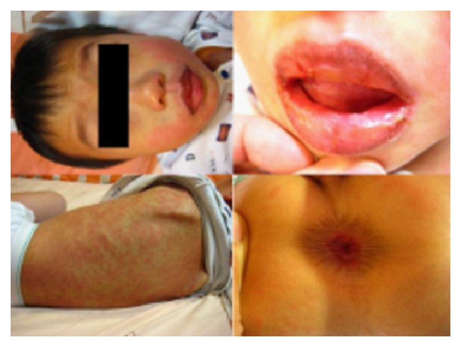
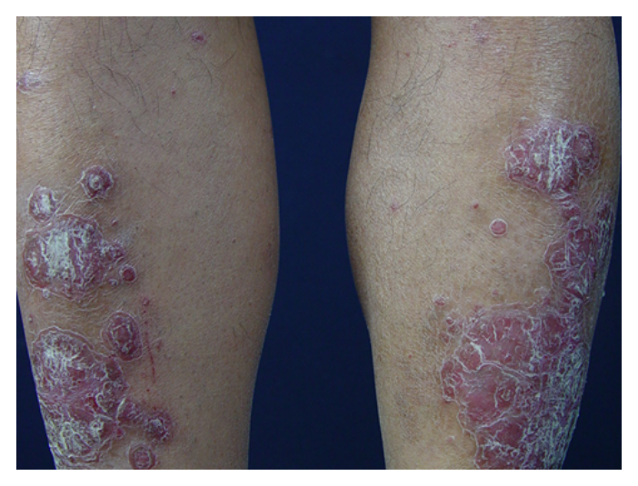
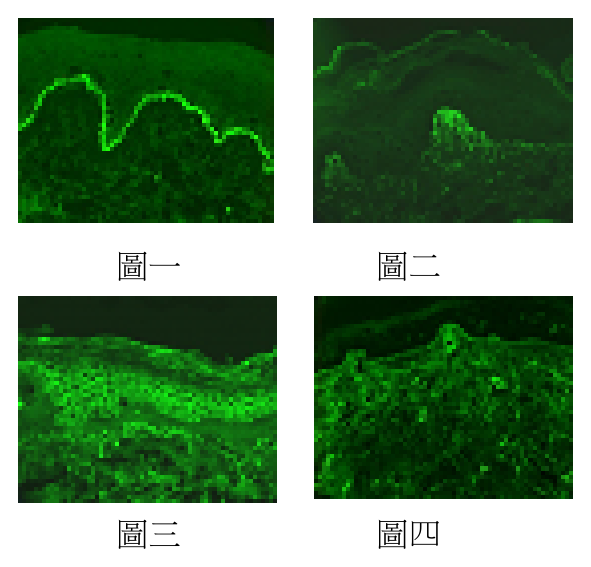
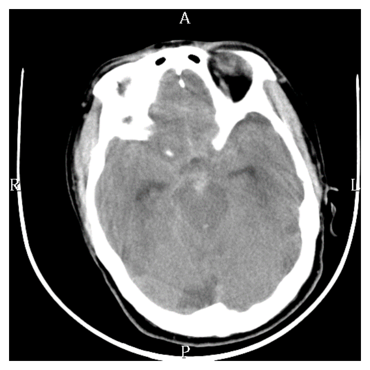
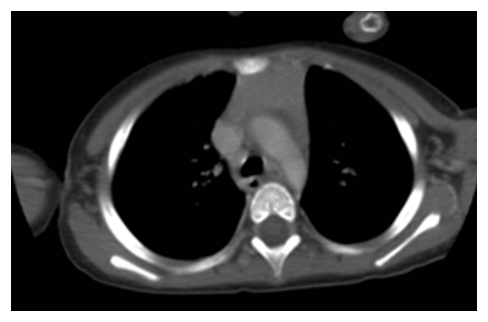
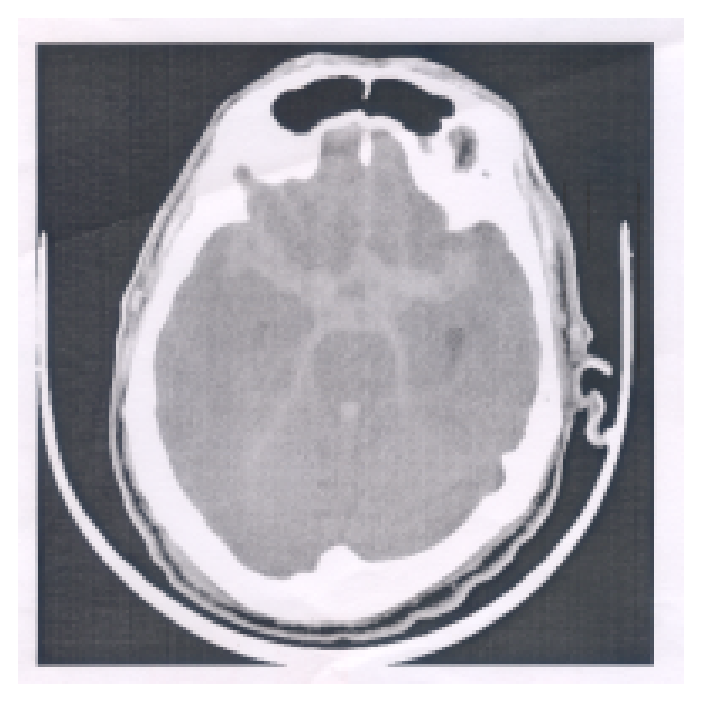

109 年第 2 次醫師醫學（四）（包括小兒科、皮膚科、神經科、精神科等科目及其相關臨床實例與醫學倫理）試題與答案
這一頁是民國 109 年第 2 次醫師醫學（四）（包括小兒科、皮膚科、神經科、精神科等科目及其相關臨床實例與醫學倫理）的整份歷屆試題，共 80 題，題目與標準答案出自考選部「國家考試試題及測驗式試題答案」開放資料，其中 80 題附有詳解。以下逐題列出題幹、選項與答案；要計時作答或記錄成績，請用線上練習。
考選部原始場次代碼：109080
線上作答這一科 →
全部 80 題
第 1 題
下列何種傳染病，在病好隔了數年後，病毒可能會再度活化而出現帶狀疱疹？
- （A）麻疹（Measles）
- （B）德國麻疹（Rubella）
- （C）腮腺炎（Mumps）
- （D）水痘（Varicella）
答案：（D）
詳解與考點
正解：感染痊癒多年後再活化並表現為帶狀疱疹，這是水痘帶狀疱疹病毒的典型特性。初次感染造成水痘後，病毒潛伏於感覺神經節，日後再活化時沿神經皮節造成帶狀疱疹，故選 D。
A：麻疹病毒造成急性感染，並非日後以帶狀疱疹形式再活化的病毒。
B：德國麻疹主要造成發疹性疾病與孕期感染風險，沒有潛伏後再活化為帶狀疱疹的典型病程。
C：腮腺炎病毒可引起腮腺炎及其他急性併發症，但不會以帶狀疱疹形式再活化。
本題考點：水痘帶狀疱疹病毒（varicella-zoster virus）初次感染造成水痘（varicella）；病毒潛伏（latency）於神經節；再活化（reactivation）造成帶狀疱疹（herpes zoster）。
第 2 題
4歲男童，因為喉嚨痛及發燒，服用抗生素2星期後，仍持續發燒並出現臨床表徵，如圖所示。下列何者為最可能的診斷？

- （A）Scarlet fever
- （B）Stevens-Johnson syndrome
- （C）Roseola infantum
- （D）Erythema multiforme
本題送分，無標準答案
詳解與考點
本題經考選部公告一律給分。患童服用抗生素兩週後仍發燒並出現皮疹（圖片無法呈現於此），(B)Stevens-Johnson syndrome與(D)Erythema multiforme皆屬藥物相關之皮膚黏膜反應，臨床表現重疊度高，僅憑文字敘述與單一圖像難以截然區分，兩者皆可能被判為合理答案。(A)Scarlet fever通常伴草莓舌與砂紙樣疹且與感染而非藥物相關，(C)Roseola infantum好發於2歲以下且疹子多在退燒後出現，均與題幹「服藥兩週後持續發燒合併表徵」的時序不符，可先排除。作答以現行小兒皮膚科藥物反應鑑別診斷教材為準。
第 3 題
關於新生兒感染巨細胞病毒（Cytomegalovirus）的敘述，下列何者錯誤？
- （A）血清陽性（Seropositive）的媽媽哺餵乳汁，新生兒感染巨細胞病毒的機率為60～70%
- （B）先天性巨細胞病毒感染的新生兒，約有90%會有臨床症狀
- （C）臨床症狀包括肝脾腫大、黃疸、出疹（Petechiae、Purpura）等
- （D）任何沒有通過聽力篩檢的新生兒，都須考慮先天性巨細胞病毒感染之可能性
答案：（B）
詳解與考點
正解：先天性巨細胞病毒感染多數新生兒出生時沒有明顯症狀，而不是大多數都有症狀。約只有少數先天感染兒在出生時呈現臨床表現，因此（B）稱約 90% 有臨床症狀把比例顛倒，為錯誤敘述，故選 B。
A：血清陽性母親的乳汁可帶有巨細胞病毒並造成嬰兒感染，題述為母乳傳播風險的描述，故非本題錯誤選項。
C：肝脾腫大、黃疸及 petechiae、purpura 是症狀性先天性巨細胞病毒感染可見的表現，敘述正確。
D：先天性巨細胞病毒感染可造成感音性聽力損失，未通過新生兒聽力篩檢時應納入鑑別診斷，敘述正確。
本題考點：先天性巨細胞病毒感染（congenital cytomegalovirus infection）多數出生時無症狀；症狀性個案可有肝脾腫大、黃疸及出血性皮疹；感音性聽力損失（sensorineural hearing loss）是重要後遺症與篩檢線索。
第 4 題
治療黴漿菌（Mycoplasma pneumoniae）肺炎，下列何種藥物最適當？
- （A）Penicillin
- （B）Vancomycin
- （C）Azithromycin
- （D）Gentamicin
答案：（C）
詳解與考點
正解：黴漿菌沒有典型細胞壁，治療須選擇能作用於細胞內蛋白質合成的藥物，而非針對細胞壁的抗生素。azithromycin 為 macrolide，可抑制細菌蛋白質合成，適用於 Mycoplasma pneumoniae 肺炎，故選 C。
A：penicillin 抑制細胞壁合成；黴漿菌缺乏細胞壁，因此對此藥天然無效。
B：vancomycin 也以細胞壁相關作用為主，無法處理沒有細胞壁的黴漿菌感染，故不適當。
D：gentamicin 為 aminoglycoside，主要用於特定需氧革蘭陰性菌等感染，並非黴漿菌肺炎的標準適當治療。
本題考點：黴漿菌肺炎（Mycoplasma pneumoniae pneumonia）由缺乏細胞壁的非典型病原引起；macrolide 如 azithromycin 可抑制蛋白質合成；β-lactam 與 vancomycin 的細胞壁作用機轉對黴漿菌無效。
第 5 題
新生女嬰為妊娠38周出生、體重4,400 gm，母親有妊娠糖尿病病史。此女嬰在出生24小時內，最有可能發生的臨床症狀？
- （A）早發性黃疸
- （B）低血糖
- （C）貧血
- （D）高血鈣
答案：（B）
詳解與考點
正解：母親有妊娠糖尿病且嬰兒體重 4,400 gm，表示胎兒期可能長期暴露於高血糖並產生高胰島素血症。出生後母體葡萄糖供應突然中止，但嬰兒胰島素仍偏高，會使血糖快速下降；因此出生 24 小時內最可能出現低血糖，故選 B。
A：黃疸可在新生兒出現，但題幹最具指向性的母體糖尿病與巨大兒線索首先提示低血糖，不是早發性黃疸。
C：糖尿病母親之嬰兒可能有特定血液學變化，但貧血不是此情境出生早期最典型、最優先預期的問題。
D：此類嬰兒較需注意的不是高血鈣；母體糖尿病相關的新生兒代謝併發症以低血糖最具代表性。
本題考點：糖尿病母親之嬰兒（infant of diabetic mother）常為巨大兒（macrosomia）；胎兒高胰島素血症（hyperinsulinism）使出生後容易低血糖（neonatal hypoglycemia）；出生早期應優先監測血糖。
第 6 題
剛出生的嬰兒身體診察發現手足發紺（acrocyanosis），下列何種是最常見的原因？
- （A）胎便吸入症候群（Meconium aspiration syndrome）
- （B）先天性發紺心臟疾病（Congenital cyanotic heart disease）
- （C）體溫過熱（Hyperthermia）
- （D）周邊血液循環不良（Peripheral circulatory sluggishness）
答案：（D）
詳解與考點
正解：新生兒只有手足發紺，屬周邊性而非中心性發紺。出生初期末梢血管張力與循環調節尚未成熟，手腳血流較慢、氧氣萃取增加，因而出現手足發紺；最常見原因為周邊血液循環不良，故選 D。
A：胎便吸入症候群會造成呼吸窘迫與全身氧合問題，較可能有中心性發紺，不是孤立手足發紺的最常見原因。
B：先天性發紺心臟病造成的是黏膜、舌頭等中心性發紺；它看似能解釋「發紺」，但題幹限定手足，位置正是鑑別關鍵。
C：體溫過熱不是新生兒手足發紺的常見生理機轉，故不符。
本題考點：手足發紺（acrocyanosis）是新生兒常見的周邊性發紺（peripheral cyanosis）；主因為周邊循環遲緩（peripheral circulatory sluggishness）；中心性發紺（central cyanosis）才須優先評估心肺氧合異常。
第 7 題
下列有關副食品添加的原則，何者最正確？
- （A）多種食物可以同時導入以增加副食品接受度
- （B）餵食果汁一天至少200 c.c.以達水分需求
- （C）8個月大時應添加蜂蜜水以增加免疫能力
- （D）注意含鐵之副食品的導入以符合營養需求
答案：（D）
詳解與考點
正解：嬰兒開始副食品後，營養需求不再能只靠奶類完全滿足，尤其要注意鐵來源。依發展階段逐步導入多樣、質地適當且含鐵的食物，可補足鐵儲存逐漸下降後的需求，因此（D）最正確，故選 D。
A：新食物宜一次導入一種並觀察耐受與過敏反應，同時導入多種食物會增加辨識不良反應來源的困難，故錯。
B：果汁不能取代奶類與正餐的水分、營養來源，且不宜以固定大量果汁達成水分需求，敘述不正確。
C：1 歲以下嬰兒不應給蜂蜜或蜂蜜水，以避免嬰兒肉毒桿菌中毒風險；增加免疫能力並非其適應目的，故錯。
本題考點：副食品（complementary feeding）應循序漸進、一次引入一種新食物；含鐵副食品（iron-rich complementary foods）有助滿足嬰兒營養需求；蜂蜜（honey）不宜提供給 1 歲以下嬰兒，以預防嬰兒肉毒桿菌中毒（infant botulism）。
第 8 題
先天性腎上腺增生症 （congenital adrenal hyperplasia）屬於下列何種遺傳模式？
- （A）Autosomal dominant
- （B）Autosomal recessive
- （C）X-linked dominant
- （D）X-linked recessive
答案：（B）
詳解與考點
正解：先天性腎上腺增生症（congenital adrenal hyperplasia, CAH）的遺傳方式。最常見的 CAH 為 21-hydroxylase 缺乏，致病基因須由父母雙方各提供一個變異等位基因才會發病，因此屬自體隱性遺傳（autosomal recessive inheritance），故選 B。
A：自體顯性遺傳（autosomal dominant inheritance）只要帶有一個致病等位基因即可表現，與 CAH 典型須兩個致病等位基因的模式不符。
C：X 染色體顯性遺傳（X-linked dominant inheritance）與性染色體相關，常見男女表現型及家系傳遞差異；CAH 的典型遺傳不依附於 X 染色體。
D：X 染色體隱性遺傳（X-linked recessive inheritance）常以男性患者較多為特徵；CAH 可同樣影響男女嬰兒，病因基因位於常染色體，故非此型。
本題考點：先天性腎上腺增生症（congenital adrenal hyperplasia, CAH）最常見為 21-hydroxylase deficiency；自體隱性遺傳（autosomal recessive inheritance）需兩個致病等位基因才發病。
第 9 題
3個月大的女嬰，體重5.8公斤，純母乳哺育。最近常出現血便，但沒有發燒，體力、精神、食慾都很好。大便除帶血絲外無特殊變化。下列敘述何者最為正確？
- （A）以母乳哺育之嬰兒也會因母親喝牛奶而發生牛奶蛋白過敏（cow's milk protein allergy）
- （B）因為沒發燒所以不可能是罹患細菌性大腸炎（bacterial colitis）
- （C）可能是塵蟎過敏，驗血檢查過敏原是最標準的診斷方法
- （D）潰瘍性大腸炎（ulcerative colitis）機率最大，立即做大腸鏡檢查
答案：（A）
詳解與考點
正解：純母乳、嬰兒整體狀況良好而反覆少量血便，這是食物蛋白誘發過敏性直腸結腸炎（food protein-induced allergic proctocolitis）的典型線索。牛奶蛋白可經母乳中的微量飲食蛋白暴露給嬰兒，因此純母乳哺育兒也可能因母親攝取牛奶而出現牛奶蛋白過敏（cow's milk protein allergy），故選 A。
B：沒有發燒和精神食慾良好使侵襲性細菌性大腸炎較不典型，但不能單憑無發燒便排除感染；細菌性腸炎仍須依病程、糞便檢驗與全身狀況判斷。
C：塵蟎是吸入性過敏原，無法合理解釋以血便為主的嬰兒腸道表現；血液過敏原檢測也不是此類非 IgE 介導腸道過敏的標準診斷。
D：潰瘍性大腸炎可造成血便而看似相關，但在 3 個月大、精神食慾良好且僅見血絲時機率遠低於食物蛋白誘發腸炎，不應把立即大腸鏡列為最適切的首步。
本題考點：食物蛋白誘發過敏性直腸結腸炎（food protein-induced allergic proctocolitis）常見於健康外觀嬰兒的少量血便；牛奶蛋白過敏（cow's milk protein allergy）可發生於純母乳嬰兒；侵襲性腸炎須以全身症狀與檢驗綜合判斷。
第 10 題
學齡兒童急性腹痛，下列那一種最少發生背部轉移性疼痛？
- （A）腸套疊（Intussusception）
- （B）胰臟炎（Pancreatitis）
- （C）腸阻塞（Intestinal obstruction）
- （D）急性闌尾炎（Appendicitis）
答案：（A）
詳解與考點
正解：「最少」出現背部轉移性疼痛。腸套疊（intussusception）的典型疼痛為陣發性腹痛、哭鬧與屈膝，疼痛主要位於腹部；其病灶不常造成背部放射或轉移痛，因此最不符合背痛表現，故選 A。
B：胰臟炎（pancreatitis）的上腹痛常放射至背部，是背部疼痛最具代表性的腹痛鑑別之一。
C：腸阻塞（intestinal obstruction）典型為絞痛、腹脹與嘔吐，背部疼痛不是其主要表現。腸套疊本身亦可造成腸阻塞，不能只依兩者的阻塞機轉判定背痛孰多；本題的比較重點仍是腸套疊典型疼痛位於腹部。
D：急性闌尾炎（appendicitis）的疼痛可隨病程由臍周轉移至右下腹；若位置較後方或有腹膜刺激，亦可能感到側腹或背部疼痛，故不是最少者。
本題考點：兒童急性腹痛（acute abdominal pain）的疼痛轉移與放射；胰臟炎（pancreatitis）常有背部放射痛；腸套疊（intussusception）典型為陣發性腹部絞痛。
第 11 題
各種成分在小腸吸收的主要部位，下列敘述何者錯誤？
- （A）葉酸（Folic acid）在十二指腸（Duodenum）與近端空腸（Proximal jejunum）
- （B）膽酸（Bile acids）在遠端迴腸（Distal ileum）
- （C）蛋白質在小腸前段100-200公分（Proximal 100-200 cm of small intestine）
- （D）鐵在遠端迴腸（Distal ileum）
答案：（D）
詳解與考點
正解：各營養素的主要吸收部位，且題目問「錯誤」。鐵主要在十二指腸及近端空腸吸收，而非遠端迴腸；遠端迴腸是膽酸與維生素 B12 回收的重要部位，故錯誤的是 D。
A：葉酸（folic acid）主要在十二指腸與近端空腸吸收，敘述正確，故不是本題答案。
B：膽酸（bile acids）經腸肝循環後主要由遠端迴腸主動再吸收，敘述正確，故非答案。
C：蛋白質經消化成胺基酸與小胜肽後，主要在近端小腸吸收；此選項所指的小腸前段符合其主要吸收區域，故正確。
本題考點：小腸營養吸收（intestinal absorption）——鐵（iron）主要於十二指腸與近端空腸吸收；膽酸（bile acids）於遠端迴腸回收；葉酸（folic acid）主要在近端小腸吸收。
第 12 題
關於全靜脈營養合併膽汁滯留（Total parenteral nutrition（TPN）-associated cholestasis）的敘述，下列何者錯誤？
- （A）危險因子包括早產、敗血症與短腸症候群（Short bowel syndrome）
- （B）脂肪給與的形式和劑量與TPN-associated cholestasis的發生有關
- （C）典型症狀通常在接受TPN治療的一個星期內發生
- （D）Ursodeoxycholic acid（UDCA）對改善黃疸可能有助益
答案：（C）
詳解與考點
正解：TPN-associated cholestasis 的發生時序，且題目問「錯誤」。此病通常與較長時間的全靜脈營養、腸道未使用及重症因素相關，並非接受 TPN 後一個星期內就典型出現；因此 C 的時程過早，故選 C。
A：早產、敗血症與短腸症候群（short bowel syndrome）都常使病童更依賴長期 TPN，也會增加膽汁滯留風險，敘述正確。
B：靜脈脂肪乳的成分與給予量會影響 TPN-associated cholestasis 的風險，敘述正確。
D：ursodeoxycholic acid（UDCA）可促進膽汁流動，臨床上對部分 TPN-associated cholestasis 病人的黃疸改善可能有助益，故非錯誤敘述。
本題考點：全靜脈營養相關膽汁滯留（TPN-associated cholestasis）與長期腸外營養的關係；危險因子（risk factors）包括早產、敗血症與腸道功能不足；腸道餵食（enteral feeding）有助維持膽汁流動。
第 13 題
有關兒童泌尿道感染（Urinary tract infection）的危險因子，下列何者最不相關？
- （A）未割包皮的男性（Uncircumcised male）
- （B）慢性便祕（Chronic constipation）
- （C）泡泡浴（Bubble bath）
- （D）膀胱輸尿管逆流（Vesicoureteral reflux）
本題送分，無標準答案
詳解與考點
本題經考選部公告一律給分。兒童泌尿道感染危險因子中，(A)未割包皮、(B)慢性便祕、(D)膀胱輸尿管逆流皆為教材公認之明確危險因子；(C)泡泡浴雖被部分教材列為相關因子（化學刺激導致尿道發炎），但其實證強度遠弱於前三者，何者「最不相關」因版本資料寬嚴不一而生分歧，部分教材反將便祕之關聯性列為最弱者。四項危險因子相關性強弱缺乏一致公認排序，難以認定單一答案。作答以現行小兒科學泌尿道感染危險因子教材為準。
第 14 題
下列那一項不是診斷抗利尿激素不適當分泌症候群（Syndrome of inappropriate antidiuretic hormone secretion）的排除條件？
- （A）同時合併心臟、肝臟、腎臟與甲狀腺等器官的問題
- （B）尿液滲透壓（Urine osmolality）﹥100 mOsm/kg
- （C）血清滲透壓（Serum osmolality）﹤280 mOsm/kg 合併血鈉值（serum sodium）﹤135 mEq/L
- （D）限水治療後無法改變低血鈉的情形
本題送分，無標準答案
詳解與考點
本題經考選部公告一律給分。SIADH診斷條件中，(B)尿滲透壓大於100 mOsm/kg、(C)血清滲透壓小於280合併血鈉小於135，均屬「診斷SIADH本身」所需的條件，而非用來排除其他疾病的排除條件，二者同時可被視為「不是排除條件」，與(D)限水後低血鈉未改善（屬確診測試而非排除條件）形成多選爭議。僅(A)合併心肝腎甲狀腺疾病屬須排除之情形，故非答案。作答以現行內科學SIADH診斷標準為準。
第 15 題
關於兒童血尿（Hematuria），下列敘述何者錯誤？
- （A）若為急性腎絲球發炎（Acute glomerulonephritis），多半會合併高血壓的症狀
- （B）血尿若來自腎絲球發炎，則在尿液檢查中可以發現變形紅血球（Dysmorphic RBC, acanthocytes）
- （C）若血尿來自下泌尿道（Lower urinary tract）的病變，尿液為茶色 （Tea-colored）或可樂顏色（Cola-colored）
- （D）細菌性泌尿道感染 （Bacterial urinary tract infection）也會引起血尿
答案：（C）
詳解與考點
正解：血尿顏色可協助定位來源，且題目問「錯誤」。腎絲球性血尿經尿液在腎小管中停留與氧化後，常呈茶色或可樂色；下泌尿道出血通常呈鮮紅或粉紅色。因此把茶色或可樂色歸給下泌尿道病變的 C 錯誤，故選 C。
A：急性腎絲球腎炎（acute glomerulonephritis）可因水鈉滯留而出現高血壓，敘述正確，故不是本題答案。
B：腎絲球來源的血尿可在尿沉渣看見變形紅血球（dysmorphic RBC, acanthocytes），此為定位腎絲球出血的重要線索，敘述正確。
D：細菌性泌尿道感染（bacterial urinary tract infection）可造成泌尿道黏膜發炎與血尿，敘述正確。
本題考點：血尿定位（localization of hematuria）——腎絲球性血尿常見變形紅血球（dysmorphic RBC）及茶色或可樂色尿；下泌尿道出血常較鮮紅；急性腎絲球腎炎（acute glomerulonephritis）可合併高血壓。
第 16 題
關於Tics的敘述，下列何者錯誤？
- （A）Gilles de la Tourette syndrome大部分案例可能是屬於隱性遺傳
- （B）Tic disorder是最常見的兒童運動異常（Movement disorder）的疾病
- （C）採用Dopamine receptor拮抗劑可以抑制Tics的行為
- （D）部分Gilles de la Tourette syndrome的病人會合併有Obsessive-compulsive的症狀
答案：（A）
詳解與考點
正解：Gilles de la Tourette syndrome 的遺傳背景，且題目問「錯誤」。Tourette 症候群具有明顯家族聚集性，但屬複雜、多基因遺傳（complex polygenic inheritance），不能說大部分案例是隱性遺傳；A 把複雜遺傳簡化為隱性遺傳，故錯誤，選 A。
B：tic disorder 是兒童常見的運動異常（movement disorder），敘述正確，故非答案。
C：多巴胺受體拮抗劑（dopamine receptor antagonist）可用於抑制較嚴重或功能受損的 tic，敘述正確。
D：部分 Tourette 症候群病人會合併強迫症狀（obsessive-compulsive symptoms）或注意力相關共病，敘述正確。
本題考點：抽動症（tic disorders）是常見兒童運動異常；Tourette 症候群（Gilles de la Tourette syndrome）具複雜遺傳與常見精神共病；多巴胺受體拮抗劑（dopamine receptor antagonists）可降低 tic。
第 17 題
4個月大的嬰兒，發現神智不清，送至急診，電腦斷層發現少量蜘蛛膜下腔出血（Subarachnoid hemorrhage）與嚴重腦水腫（Brain edema），眼底檢查發現視網膜出血（Retinal hemorrhage），身體診察無外傷之表現，下列何者是最可能的診斷？
- （A）腦膜炎（Meningitis）
- （B）虐待性腦傷（Abusive head trauma）
- （C）腦炎（Encephalitis）
- （D）腦血管畸型（Cerebral vascular malformation）
答案：（B）
詳解與考點
正解：嬰兒嚴重腦水腫、少量蜘蛛膜下腔出血與視網膜出血的組合，即使身體表面沒有外傷，仍高度提示虐待性腦傷（abusive head trauma）。快速加減速造成的顱內損傷可伴隨視網膜出血，外觀缺乏瘀傷並不能排除，故選 B。
A：腦膜炎（meningitis）可造成意識改變與腦水腫，但無法優先解釋視網膜出血合併顱內出血的典型組合。
C：腦炎（encephalitis）也可引起神智不清與腦水腫，但單靠此診斷難以解釋視網膜出血與蜘蛛膜下腔出血同時出現。
D：腦血管畸型（cerebral vascular malformation）可能造成顱內出血而看似相關，但本題年齡與視網膜出血、嚴重腦水腫的整體型態更符合虐待性腦傷。
本題考點：虐待性腦傷（abusive head trauma）的警訊包括顱內出血、腦水腫與視網膜出血；隱匿性創傷（occult injury）可在皮膚無明顯外傷時存在；嬰兒不明原因意識改變須考慮非意外傷害。
第 18 題
下列何者非新生兒之原始反射動作（Primitive reflexes）？
- （A）手掌抓握（Palmar grasp reflex）
- （B）擁抱反射（Moro reflex）
- （C）降落傘反射（Parachute reflex）
- （D）覓乳反射（Rooting reflex）
答案：（C）
詳解與考點
正解：「非新生兒」原始反射。降落傘反射（parachute reflex）不是出生即有的原始反射，而是嬰兒後續發展出的保護性伸展反應；它出現後通常持續存在，故選 C。
A：手掌抓握反射（palmar grasp reflex）是新生兒可見的原始反射，會隨神經發育而逐漸整合，故非答案。
B：擁抱反射（Moro reflex）是新生兒的代表性原始反射，故不是本題所問的非原始反射。
D：覓乳反射（rooting reflex）可協助新生兒尋找乳頭與進食，屬新生兒原始反射，故非答案。
本題考點：原始反射（primitive reflexes）包括手掌抓握、擁抱與覓乳反射；降落傘反射（parachute reflex）是保護性反應（protective reaction），在出生後才出現並持續。
第 19 題
下列何項不是兒童接受合成生長激素（recombinant growth hormone）治療的併發症或副作用？
- （A）第二型糖尿病（type 2 diabetes mellitus）
- （B）腦假瘤（pseudotumor cerebri）
- （C）庫賈氏病（Creutzfeldt-Jakob disease）
- （D）使脊柱側彎（scoliosis）惡化
答案：（C）
詳解與考點
正解：題目限定「合成」生長激素（recombinant growth hormone）。庫賈氏病（Creutzfeldt-Jakob disease）是過去使用人類腦下垂體來源生長激素時曾有的朊毒體傳播風險；重組生長激素不取自人類腦下垂體，不會造成此併發症，故選 C。
A：生長激素會影響胰島素敏感性與葡萄糖代謝，可能增加糖代謝異常或第二型糖尿病（type 2 diabetes mellitus）的風險，故非答案。
B：腦假瘤（pseudotumor cerebri）是兒童生長激素治療需留意的少見不良反應，若出現頭痛或視覺症狀須評估，故非答案。
D：快速生長可能使既有脊柱側彎（scoliosis）進展，治療期間應追蹤，故非答案。
本題考點：重組生長激素（recombinant growth hormone）的不良反應包括顱內壓升高與糖代謝異常；庫賈氏病（Creutzfeldt-Jakob disease）與舊式人類腦下垂體來源生長激素有關，而非重組製劑。
第 20 題
10歲女孩，瘦小，家族無糖尿病病史，最近發現有多吃多尿，尿液檢查呈現尿糖及尿酮反應，血液檢查發現高血糖，最有可能之診斷為何？
- （A）小胖威利症候群（Prader-Willi syndrome）
- （B）第二型糖尿病（Type 2 diabetes）
- （C）年輕人成年型糖尿病（Maturity-onset diabetes of the young）
- （D）第一型糖尿病（Type 1 diabetes）
答案：（D）
詳解與考點
正解：10 歲瘦小女孩出現多吃、多尿、高血糖、尿糖及尿酮。這組合代表胰島素缺乏導致脂肪分解與酮體生成，最符合第一型糖尿病（type 1 diabetes），故選 D。
A：小胖威利症候群（Prader-Willi syndrome）常有嬰幼兒期肌張力低下及後續食慾亢進與肥胖，不符合本題瘦小、酮尿的急性代謝表現。
B：第二型糖尿病（type 2 diabetes）常與肥胖及胰島素阻抗相關；雖可有高血糖，但本題的瘦小與尿酮更指向絕對胰島素缺乏。
C：年輕人成年型糖尿病（maturity-onset diabetes of the young, MODY）常有跨世代家族史，通常為非酮症傾向；沒有家族史且出現尿酮，使其不如第一型糖尿病適切。
本題考點：第一型糖尿病（type 1 diabetes）由胰島 β 細胞破壞造成胰島素缺乏；糖尿病酮症（diabetic ketosis）提示脂肪分解增加；MODY 常具常染色體顯性家族史且通常不以酮症表現。
第 21 題
下列有關藥物誘發狼瘡（Drug-induced lupus）的敘述，何者正確？
- （A）女性的發生率高於男性
- （B）常出現抗histone抗體（Antihistone antibody）
- （C）常引起嚴重的腎炎（Nephritis）
- （D）常合併補體（Complement）下降
答案：（B）
詳解與考點
正解：藥物誘發狼瘡（drug-induced lupus）的血清學特徵。抗組蛋白抗體（antihistone antibody）在藥物誘發狼瘡很常見，是最具代表性的檢驗線索，故選 B。
A：藥物誘發狼瘡與特定藥物暴露及個體代謝、免疫背景有關，沒有如原發性全身性紅斑狼瘡那樣明顯的女性優勢，敘述不正確。
C：藥物誘發狼瘡常以關節痛、肌痛與漿膜炎表現，嚴重腎炎並不常見；這是它與原發性全身性紅斑狼瘡的重要區別。
D：補體（complement）通常維持正常，明顯低補體較支持原發性全身性紅斑狼瘡的活動性免疫複合體疾病，故非正確敘述。
本題考點：藥物誘發狼瘡（drug-induced lupus）常見抗組蛋白抗體（antihistone antibody）；與全身性紅斑狼瘡（systemic lupus erythematosus）相比，腎炎與低補體較少見；停用致病藥物是處置核心。
第 22 題
嬰兒的皮膚、口腔、呼吸道以及腸胃道常反覆地發生細菌感染，每次感染時的抽血檢查均發現白血球非常高，臍帶很晚才掉，且有肚臍炎（Omphalitis），此病嬰最可能罹患何種疾病？
- （A）Bruton agammaglobulinemia
- （B）慢性肉芽腫病（Chronic granulomatous disease）
- （C）嚴重合併性免疫缺乏症（Severe combined immunodeficiency）
- （D）白血球沾黏分子缺乏症（Leukocyte adhesion deficiency）
答案：（D）
詳解與考點
正解：反覆細菌感染、感染時白血球很高、臍帶延遲脫落及臍炎（omphalitis）。白血球沾黏分子缺乏症（leukocyte adhesion deficiency）因中性球無法有效黏附血管內皮並移行至感染組織，會出現白血球增多、膿液少與臍帶延遲脫落，故選 D。
A：Bruton agammaglobulinemia 以 B 細胞與免疫球蛋白缺乏造成反覆細菌感染為主，但不會典型造成臍帶延遲脫落與顯著白血球增多。
B：慢性肉芽腫病（chronic granulomatous disease）是吞噬細胞氧化爆發缺陷，容易感染特定過氧化氫酶陽性菌與黴菌；臍帶延遲脫落不是其代表性線索。
C：嚴重合併性免疫缺乏症（severe combined immunodeficiency）會有嚴重、廣泛感染與生長不良，但本題的中性球移行失敗特徵更直接指向白血球沾黏分子缺乏症。
本題考點：白血球沾黏分子缺乏症（leukocyte adhesion deficiency）造成中性球移行（neutrophil extravasation）障礙；典型線索為臍帶延遲脫落、臍炎、反覆細菌感染及白血球增多；慢性肉芽腫病（chronic granulomatous disease）則為氧化爆發缺陷。
第 23 題
有關氣喘（asthma）的治療，下列敘述何者錯誤？
- （A）對於持續型氣喘的小朋友，建議使用吸入型類固醇（inhaled corticosteroids），作為初始的控制藥物
- （B）緩釋型茶鹼（theophylline）也可作為氣喘控制藥物
- （C）如果藥物控制良好持續3個月以上，則可以考慮降階（step down）治療
- （D）白三烯素調節劑（leukotriene-modifying agent）為目前最有效的氣喘控制藥物
答案：（D）
詳解與考點
正解：「最有效」的氣喘控制藥物，且題目問錯誤敘述。持續型氣喘的首選控制藥物是吸入型類固醇（inhaled corticosteroids, ICS），白三烯素調節劑（leukotriene-modifying agent）可作為替代或加用藥物，但控制效果通常不及 ICS；D 的「最有效」錯誤，故選 D。
A：持續型氣喘兒童建議以吸入型類固醇作為初始控制藥物，能有效降低氣道發炎與急性惡化，敘述正確。
B：緩釋型茶鹼（theophylline）可作為控制藥物之一，但療效與安全性限制使其現今較少優先使用；「可作為」的敘述仍正確。
C：控制良好持續一段時間後可考慮降階治療（step down），以尋求維持控制的最低有效治療強度，敘述正確。
本題考點：氣喘長期控制（asthma long-term control）以吸入型類固醇（inhaled corticosteroids）為核心；白三烯素調節劑（leukotriene-modifying agents）不是最有效的單一控制藥；降階治療（step-down therapy）須在持續良好控制後審慎進行。
第 24 題
關於過敏性紫斑症（Henoch-Schönlein purpura）之敘述，下列何者錯誤？
- （A）常發生在3～10歲之間，並且常發生於冬季及春季
- （B）紫斑（Purpura）主要出現在下肢，抽血會發現血小板低下
- （C）以支持性療法為主，大部分病人預後良好，病情大多可於4週內改善
- （D）過敏性紫斑症若有較嚴重之腸胃侵犯，可考慮給與類固醇
答案：（B）
詳解與考點
正解：過敏性紫斑症（Henoch-Schönlein purpura，現稱 IgA vasculitis）的紫斑並非血小板低下所致。此病是小血管 IgA 血管炎，會有非血小板低下性可觸及紫斑（nonthrombocytopenic palpable purpura），故 B 錯誤。
A：IgA 血管炎好發於兒童，常見於 3～10 歲，且冬春季節較常發生，敘述正確，故非答案。
C：多數病人以支持性治療即可，整體預後良好，皮膚與關節等表現多可在數週內改善，敘述正確。
D：若有較嚴重腹痛或腸胃道侵犯，可考慮類固醇（corticosteroid）以改善症狀，敘述正確，故非答案。
本題考點：IgA 血管炎（IgA vasculitis）是小血管炎（small-vessel vasculitis）；可觸及紫斑（palpable purpura）主要位於下肢且血小板通常正常；治療以支持性療法（supportive care）為主。
第 25 題
下列何種腫瘤其最高發生機率之年紀於一歲以內？
- （A）Acute lymphoblastic leukemia
- （B）Brain tumor
- （C）Bone tumor
- （D）Neuroblastoma
答案：（D）
詳解與考點
正解：腫瘤「最高發生機率」在一歲以內。神經母細胞瘤（neuroblastoma）是嬰幼兒最具代表性的實體腫瘤之一，發病高峰在很小年齡，故四者中最符合一歲內高發的是 D。
A：急性淋巴性白血病（acute lymphoblastic leukemia）是兒童常見惡性腫瘤，但發病高峰主要不在一歲以內。
B：腦腫瘤（brain tumor）涵蓋多種不同病理型態，兒童可發生，但整體最高發生年齡不像神經母細胞瘤集中於嬰兒期。
C：骨腫瘤（bone tumor）多與青春期骨骼快速生長時期相關，與一歲內的年齡分布不符。
本題考點：神經母細胞瘤（neuroblastoma）是嬰幼兒常見的實體惡性腫瘤；兒童腫瘤年齡分布（age distribution of childhood cancers）有助鑑別；骨腫瘤（bone tumor）常見於青春期。
第 26 題
有關重度乙型海洋性貧血（β-thalassemia major）的敘述，下列何者最不正確？
- （A）通常在6個月到1歲大間，貧血會越來越嚴重而需輸血
- （B）輸血會造成鐵質沉積，最好控制在血色素7 g/dL即可
- （C）又稱為庫利氏貧血（Cooley anemia）
- （D）為自體隱性（Autosomal recessive）遺傳
答案：（B）
詳解與考點
正解：重度 β-thalassemia major 的長期輸血目標，且題目問「最不正確」。規律輸血的目的在抑制無效造血並維持足夠組織供氧；把血色素控制在 7 g/dL 會使病童長期貧血，並非適切的輸血控制目標，因此 B 最不正確，故選 B。
A：β-thalassemia major 在胎兒血色素逐漸下降後開始明顯表現，常在 6 個月到 1 歲間出現進行性嚴重貧血而需輸血，敘述正確。
C：β-thalassemia major 又稱庫利氏貧血（Cooley anemia），敘述正確，故非答案。
D：β-thalassemia major 為自體隱性遺傳（autosomal recessive inheritance），敘述正確。
本題考點：重度乙型海洋性貧血（β-thalassemia major）在嬰兒期出現嚴重貧血並需規律輸血；輸血治療（transfusion therapy）可導致鐵質沉積（iron overload）而須長期監測與處置；庫利氏貧血（Cooley anemia）為其別名。
第 27 題
感染相關的噬血症候群（Infection-associated hemophagocytic syndrome），下列那一項最不支持此診斷？
- （A）Hypofibrinogenemia
- （B）Hypertriglyceridemia
- （C）Hyperferritinemia
- （D）Thrombocytosis
答案：（D）
詳解與考點
正解：感染相關噬血症候群（infection-associated hemophagocytic syndrome, HLH）的典型實驗室表現。HLH 因高度發炎與凝血異常，常見高三酸甘油脂血症、高鐵蛋白血症、低纖維蛋白原血症及血球減少；血小板增多（thrombocytosis）與此相反，因此最不支持診斷，故選 D。
A：低纖維蛋白原血症（hypofibrinogenemia）是 HLH 的支持性線索，反映嚴重發炎與凝血系統異常，故不是答案。
B：高三酸甘油脂血症（hypertriglyceridemia）是 HLH 常見的診斷支持條件之一，故非答案。
C：高鐵蛋白血症（hyperferritinemia）在 HLH 很常見，雖非單獨特異診斷，但可強力支持此高度發炎狀態，故非答案。
本題考點：噬血性淋巴組織球增生症（hemophagocytic lymphohistiocytosis, HLH）的高發炎表現包括高鐵蛋白血症（hyperferritinemia）、高三酸甘油脂血症（hypertriglyceridemia）與低纖維蛋白原血症（hypofibrinogenemia）；血球減少（cytopenias）比血小板增多更符合。
第 28 題
Reverse differential cyanosis是指上肢血氧飽和度低於下肢血氧飽和度，此現象最常發現於下列何種疾病？
- （A）主動脈弓截斷（Interruption of aortic arch）
- （B）開放性動脈導管（Patent ductus arteriosus）
- （C）心室中隔缺損（Ventricular septal defect）
- （D）完全大血管轉位合併開放性動脈導管（Transposition of the great arteries with patent ductus arteriosus）
答案：（D）
詳解與考點
正解：「上肢血氧飽和度低於下肢」的 reverse differential cyanosis，代表含氧較高的血流經動脈導管優先送往下半身。完全大血管轉位時，肺動脈接左心室、主動脈接右心室；若合併開放性動脈導管，肺血管阻力偏高或合併主動脈弓阻塞時，較氧合的肺動脈血可經導管流向降主動脈，使下肢飽和度高於上肢，故選 D。
A：主動脈弓截斷主要造成下半身依賴動脈導管灌流；導管血流與下肢氧合的關係不會產生本題所述的反向差異性發紺。
B：單純開放性動脈導管在沒有大血管轉位時，通常不會形成使下肢氧合高於上肢的血流配置；它看似與動脈導管有關，卻少了決定血液去向的轉位解剖。
C：心室中隔缺損是心室間分流，未改變大血管與心室的連接位置，不能解釋典型 reverse differential cyanosis。
本題考點：反向差異性發紺（reverse differential cyanosis）與完全大血管轉位（transposition of the great arteries）；開放性動脈導管（patent ductus arteriosus）的分流方向取決於相連血管的氧合血流。
第 29 題
下列何種兒童心臟疾病，最不會出現左心室擴大的現象？
- （A）心肌炎（Myocarditis）
- （B）心室中隔缺損（Ventricular septal defect）
- （C）心房中隔缺損（Atrial septal defect）
- （D）擴張型心肌病變（Dilated cardiomyopathy）
答案：（C）
詳解與考點
正解：「最不會出現左心室擴大」。心房中隔缺損的左向右分流發生在心房層級，增加的是右心房、右心室與肺循環的容量負荷，左心室通常不因病灶本身擴大，故選 C。
A：心肌炎可直接損傷心肌收縮功能；左心室為維持搏出量可出現擴張，故不能說最不會發生。
B：心室中隔缺損的左向右分流增加肺血流，回流至左心房及左心室，造成左心容量負荷與擴大。它也有左向右分流，但分流層級不同，是常見誘答。
D：擴張型心肌病變的定義即包括心室腔擴張與收縮功能受損，左心室擴大是典型表現。
本題考點：心房中隔缺損（atrial septal defect）的右心容量負荷；心室中隔缺損（ventricular septal defect）的左心容量負荷；心臟腔室擴大可由分流位置判讀。
第 30 題
下列何種細菌較少造成兒童感染性心內膜炎（Infective endocarditis）？
- （A）Group D streptococcus（enterococcus）
- （B）Streptococcus sanguinis
- （C）Staphylococcus aureus
- （D）Streptococcus pneumoniae
答案：（D）
詳解與考點
正解：兒童感染性心內膜炎中「較少造成」的病原。肺炎鏈球菌雖可造成侵襲性感染，卻不是兒童感染性心內膜炎的常見致病菌；相較之下，葡萄球菌、草綠色鏈球菌群與腸球菌較具代表性，故選 D。
A：Group D streptococcus 所稱的 enterococcus 可造成感染性心內膜炎，尤其在特定菌血症或醫療照護相關情境，並非較少見的典型排除項。
B：Streptococcus sanguinis 屬草綠色鏈球菌群，與口腔菌血症及亞急性感染性心內膜炎相關，是重要病原。
C：Staphylococcus aureus 是感染性心內膜炎的重要病原，可造成急性且破壞性病程，因此不符「較少造成」。
本題考點：感染性心內膜炎（infective endocarditis）的常見病原；草綠色鏈球菌（viridans streptococci）、金黃色葡萄球菌（Staphylococcus aureus）與腸球菌（enterococci）的臨床角色。
第 31 題
2歲女童體型特別高瘦，手腳與手指（腳趾）特別細長，關節鬆弛，有輕度漏斗胸，心臟超音波呈現二尖瓣脈脫垂及主動脈回流，下列何者為最可能之診斷？
- （A）Marfan syndrome
- （B）Menkes syndrome
- （C）Kallmann syndrome
- （D）Klinefelter syndrome
答案：（A）
詳解與考點
正解：幼兒的高瘦細長體型、長指、關節鬆弛、漏斗胸，再合併二尖瓣脫垂及主動脈逆流；這組結締組織與心血管表徵最符合 Marfan syndrome，故選 A。此病的主動脈根部病變尤其重要，需持續追蹤主動脈擴張與剝離風險。
B：Menkes syndrome 是銅代謝異常，常見捲曲脆弱毛髮、神經退化與生長不良，並非本題的長肢長指及瓣膜－主動脈組合。
C：Kallmann syndrome 以低性腺激素性性腺功能低下與嗅覺異常為主，通常在青春期延遲時呈現，無法解釋此幼兒的結締組織表現。
D：Klinefelter syndrome 常在青春期後因高瘦、性腺功能低下或不孕被辨識，但不以幼兒的主動脈瓣膜與骨骼結締組織表徵為核心。
本題考點：馬凡氏症候群（Marfan syndrome）；結締組織異常（connective tissue disorder）的骨骼表徵；主動脈根部病變（aortic root disease）與二尖瓣脫垂（mitral valve prolapse）。
第 32 題
Noonan Syndrome與Turner Syndrome有許多相似的異常表徵，不包括下列何者？
- （A）身材矮小（Short stature）
- （B）盾狀胸（Shield chest）
- （C）短或蹼狀頸（Short or webbed neck）
- （D）左心異常（Left-heart abnormalities）
答案：（D）
詳解與考點
正解：比較 Noonan syndrome 與 Turner syndrome 的共同外觀與心臟表徵。「左心異常」不是兩者共同的典型特徵：Turner syndrome 常見左側阻塞性病變，如主動脈縮窄；Noonan syndrome 則較典型為肺動脈瓣狹窄等右心流出道病變，故選 D。
A：身材矮小可見於 Noonan syndrome 與 Turner syndrome，屬兩者可重疊的臨床外觀，故非答案。
B：盾狀胸是兩者皆可能出現的胸廓特徵，雖非單靠此項即可診斷，仍屬相似表徵。
C：短頸或蹼狀頸同樣是兩者常被並列比較的身體表徵，故不是「不包括」的一項。
本題考點：努南症候群（Noonan syndrome）與透納症候群（Turner syndrome）的鑑別；左心阻塞性病變（left-sided obstructive lesions）；肺動脈瓣狹窄（pulmonary valve stenosis）。
第 33 題
足月新生兒出現餵食困難、嘔吐、嗜睡，進而抽搐、昏迷。當排除肝膽腸道異常及感染或其他產傷，而發現血氨升高，且陰離子隙（anion gap）升高，則最可能為：
- （A）尿素循環障礙 （Urea cycle defects）
- （B）有機酸血症 （Organic acidemia）
- （C）胺基酸血症 （Aminoacidopathies）
- （D）半乳糖血症（Galactosemia）
答案：（B）
詳解與考點
正解：足月新生兒急性惡化、血氨升高，且陰離子隙升高。高陰離子隙代表有未測得酸性代謝物累積；有機酸血症會累積有機酸並抑制尿素循環，因而同時造成代謝性酸中毒與高血氨，故選 B。
A：尿素循環障礙也會造成嚴重高血氨，是最強誘答；但其典型酸鹼型態是呼吸性鹼中毒或正常陰離子隙，不能良好解釋本題的陰離子隙升高。
C：胺基酸血症是較廣泛的代謝疾病類別，部分可有新生兒症狀，但「高血氨合併高陰離子隙」更具體指向有機酸累積。
D：半乳糖血症常在攝入乳糖後出現黃疸、肝功能異常、敗血症風險或白內障；題幹已排除肝膽異常，且酸鹼線索不符。
本題考點：有機酸血症（organic acidemia）；高陰離子隙代謝性酸中毒（high-anion-gap metabolic acidosis）；高血氨（hyperammonemia）與尿素循環抑制。
第 34 題
44歲男性，主要於頭部、肘部、膝部及小腿出現如圖所示之皮膚病變，有4年病史。最可能的診斷為何？

- （A）慢性單純苔癬（lichen simplex chronicus）
- （B）蕈狀肉芽腫（mycosis fungoides）
- （C）玫瑰糠疹（pityriasis rosea）
- （D）乾癬（psoriasis vulgaris）
答案：（D）
詳解與考點
正解：圖中可見雙側小腿伸側分布的多發、界線清楚紅色斑塊；題幹另述頭部、肘部與膝部亦有病灶，表面覆有厚而乾燥的銀白色鱗屑；合併頭部病灶與4年慢性病程，是尋常型乾癬（psoriasis vulgaris）的典型形態與分布，故選D。
A：慢性單純苔癬（lichen simplex chronicus）是反覆搔抓後形成的局部苔癬化斑塊，常見皮紋加深、色素沉著與劇癢；不像圖中有對稱性伸側多發、厚銀白鱗屑的斑塊。
B：蕈狀肉芽腫（mycosis fungoides）為皮膚T細胞淋巴瘤，早期多是軀幹或臀部等非日曬區緩慢擴大的斑疹或薄斑塊，外觀可模仿濕疹；其典型分布與鱗屑形態均不如（D）乾癬相符。
C：玫瑰糠疹（pityriasis rosea）常先出現母斑，之後在軀幹依皮膚張力線散布多個橢圓形、具領圈狀鱗屑的病灶，通常為自限性數週至數月病程；與本題4年、以頭部及四肢伸側為主的厚鱗屑斑塊不符。
本題考點：尋常型乾癬（psoriasis vulgaris）為慢性發炎性皮膚病，典型為界線清楚的紅色斑塊與銀白色鱗屑；病灶偏好頭皮及肘、膝等伸側（extensor surfaces），可呈對稱分布。
第 35 題
關於多形性紅斑（erythema multiforme）的敘述，下列何者錯誤？
- （A）病理組織檢查常見真皮纖維化
- （B）典型表徵為標靶病灶（target lesion）
- （C）部分病人和單純疱疹病毒的感染相關
- （D）發病部位可包括黏膜
答案：（A）
詳解與考點
正解：多形性紅斑的病理表現。多形性紅斑是急性、免疫介導的介面性皮膚炎，組織可見表皮壞死與基底層液化變性等改變；「常見真皮纖維化」並非其典型病理，故錯誤的是 A。
B：標靶病灶是多形性紅斑的典型臨床外觀，常有中央區、較淡的中間區與外圍紅斑，敘述正確。
C：多形性紅斑常與單純疱疹病毒感染相關，感染後反覆發作是常見臨床線索，故非錯誤敘述。
D：多形性紅斑可累及黏膜；黏膜受累的程度可用於區分不同臨床嚴重度，故敘述正確。
本題考點：多形性紅斑（erythema multiforme）；標靶病灶（target lesion）；介面性皮膚炎（interface dermatitis）與單純疱疹病毒（herpes simplex virus）相關性。
第 36 題
下列何種疾病，不是金黃色葡萄球菌（Staphylococcus aureus）所引起？
- （A）膿痂疹（impetigo）
- （B）癤（furuncle）
- （C）癰（carbuncle）
- （D）疣（wart）
答案：（D）
詳解與考點
正解：「不是」金黃色葡萄球菌引起的疾病。疣是人類乳突病毒（human papillomavirus, HPV）感染造成的表皮增生，並非細菌性膿皮症，故選 D。
A：膿痂疹可由金黃色葡萄球菌造成，也可能與化膿性鏈球菌相關；其膿皰與蜂蜜色痂皮是典型表現。
B：癤是毛囊及周圍組織的深部感染，金黃色葡萄球菌為常見致病菌。
C：癰是多個相鄰毛囊深部感染融合形成的病灶，常見病原亦是金黃色葡萄球菌。
本題考點：金黃色葡萄球菌（Staphylococcus aureus）所致膿皮症（pyoderma）；人類乳突病毒（human papillomavirus）；疣（wart）的病毒性病因。
第 37 題
45歲男性，數星期內於軀幹及四肢皮膚出現許多鬆垮的水疱；這些水疱非常容易破裂並留下十分疼痛之糜爛病灶。口腔黏膜亦見有糜爛病灶，皮膚理學檢查有Nikolsky sign。將此患者病灶旁的正常皮膚切片做直接免疫螢光檢查（direct immunofluorescent test），下列何者為最可能的結果？圖一 圖二圖三 圖四

- （A）IgM沈積（附圖一）
- （B）IgA沈積（附圖二）
- （C）IgG沈積（附圖三）
- （D）IgE沈積（附圖四）
答案：（C）
詳解與考點
正解：鬆垮且易破裂的水疱、疼痛性口腔糜爛與 Nikolsky sign，典型指向尋常型天疱瘡（pemphigus vulgaris）。其自體抗體主要為 IgG，針對表皮細胞間橋粒相關的 desmoglein，造成表皮細胞棘層鬆解（acantholysis）。病灶旁皮膚直接免疫螢光可見表皮細胞間網狀、如魚網般的 IgG 沉積；附圖三呈現廣泛細胞間網狀螢光，故選 C。
A：附圖一的 IgM 螢光呈沿表皮交界處的連續彎曲線狀分布，並非尋常型天疱瘡典型的表皮細胞間網狀 IgG 沉積。IgM 也不是本病造成橋粒抗體反應的主要免疫球蛋白。
B：附圖二的 IgA 螢光分布較侷限，未呈現表皮細胞間廣泛網狀染色。IgA 天疱瘡可有膿疱性病灶，但本題的鬆垮水疱、口腔侵犯及 Nikolsky sign 更符合 IgG 介導的尋常型天疱瘡。
D：附圖四的 IgE 螢光可見局部較亮的顆粒狀區域，並非表皮細胞間均勻網狀沉積。IgE 不屬尋常型天疱瘡直接免疫螢光診斷所要找的主要抗體。
本題考點：尋常型天疱瘡（pemphigus vulgaris）由抗 desmoglein 的 IgG 引起棘層鬆解；直接免疫螢光（direct immunofluorescence）於病灶旁皮膚見表皮細胞間網狀 IgG 沉積；Nikolsky sign 與脆弱鬆垮水疱支持表皮內水疱。
第 38 題
白斑在UVB治療後，出現以毛孔為中心的黑色小點（follicular pattern repigmentation），這些黑色素細胞來自於：
- （A）表皮殘餘的黑色素細胞
- （B）真皮的黑色素細胞移行到表皮
- （C）毛囊matrix決定髮色的黑色素細胞，移行到表皮
- （D）毛囊outer root sheath的黑色素母細胞活化後，移行到表皮
答案：（D）
詳解與考點
正解：UVB 治療後「以毛孔為中心」的再色素化。白斑的毛囊周圍色素再生，主要來自毛囊 outer root sheath 中休眠的黑色素母細胞；其受刺激活化、分化後向表皮移行，形成 follicular pattern repigmentation，故選 D。
A：表皮殘餘黑色素細胞可參與部分再色素化，但無法最直接解釋由毛孔中央向外出現黑點的特徵圖樣。
B：真皮本非黑色素細胞向表皮補充的主要儲庫；黑色素細胞的生理位置與再生來源不支持此說。
C：毛囊 matrix 的黑色素細胞主要參與毛幹色素形成；它看似同在毛囊內，卻不是表皮再色素化所依賴的黑色素母細胞儲庫。
本題考點：白斑（vitiligo）的光照治療；毛囊外根鞘（outer root sheath）；黑色素母細胞（melanocyte stem cells）與毛囊型再色素化（follicular repigmentation）。
第 39 題
關於日光性角化症（actinic keratosis）的敘述，下列何者錯誤？
- （A）此病為一種癌前期的病徵（precancerous or premalignant lesion）
- （B）男性較為常見
- （C）長期的紫外線曝曬是危險因子之一
- （D）若不接受治療，很可能進展為黑色素細胞癌（melanoma）
答案：（D）
詳解與考點
正解：日光性角化症未治療後的進展方向。日光性角化症是長期紫外線傷害造成的角質細胞異型增生，屬皮膚鱗狀細胞癌的癌前病灶，而非黑色素細胞癌的前驅病變，故錯誤的是 D。
A：日光性角化症被視為癌前期或惡性前病灶，反映其與鱗狀細胞癌連續譜的關係，敘述正確。
B：累積日曬與戶外暴露會影響盛行率，男性常較多見，敘述符合流行病學趨勢。
C：長期紫外線曝曬是日光性角化症的主要危險因子，尤其見於日光曝露部位，敘述正確。
本題考點：日光性角化症（actinic keratosis）；皮膚鱗狀細胞癌（cutaneous squamous cell carcinoma）；紫外線傷害（ultraviolet radiation damage）與癌前病灶。
第 40 題
關於異位性皮膚炎（atopic dermatitis）的敘述，下列何者錯誤？
- （A）血清中IL-31的濃度增加和異位性皮膚炎的嚴重程度有關
- （B）病情嚴重難以控制的病人，可考慮使用口服環孢靈素（cyclosporine）治療
- （C）大部分患者可發現血液中IgE及嗜中性白血球增加
- （D）急性發作期，光照治療可有效做為輔助治療
答案：（C）
詳解與考點
正解：異位性皮膚炎的典型血液學特徵。異位性皮膚炎多見 IgE 升高與嗜酸性白血球增加，選項卻寫成嗜中性白血球增加，故錯誤的是 C。嗜中性白血球上升較提示細菌感染或其他發炎情境，不能作為此病的典型特徵。
A：IL-31 與搔癢及異位性皮膚炎疾病活動度相關，血清濃度增加可反映較嚴重的發炎與搔癢表現，故非答案。
B：嚴重且難控制的病人可在專科評估下考慮全身性免疫調節治療，包括口服 cyclosporine，敘述方向正確。
D：光照治療可作為部分病人的輔助治療；雖須依病灶狀態與暴露風險選擇，並非本題錯誤處。
本題考點：異位性皮膚炎（atopic dermatitis）；第二型發炎（type 2 inflammation）；免疫球蛋白 E（immunoglobulin E, IgE）與嗜酸性白血球（eosinophil）。
第 41 題
有關neurofibromatosis type 1（NF-1）的敘述，下列何者錯誤？
- （A）自體顯性遺傳
- （B）符合NF-1 診斷的café-au-lait spots病灶大小，在成年人要大於30mm
- （C）pigmented hamartoma of the iris（Lisch nodules）是臨床上的重要表徵
- （D）plexiform neurofibromas可能會出現惡性變化
答案：（B）
詳解與考點
正解：NF-1 診斷所用 café-au-lait spots 的尺寸門檻。青春期後或成人的病灶直徑門檻為大於 15 mm，不是大於 30 mm；因此 B 的數值錯誤，故選 B。
A：NF-1 為自體顯性遺傳疾病，但亦可見新發突變，敘述本身正確。
C：Lisch nodules 是虹膜的色素性錯構瘤，為 NF-1 重要的臨床診斷表徵，故非錯誤選項。
D：plexiform neurofibromas 有惡性周邊神經鞘瘤轉化風險；它雖然並非每個病灶都會惡變，但「可能」惡性變化的敘述正確。
本題考點：第一型神經纖維瘤病（neurofibromatosis type 1）；咖啡牛奶斑（café-au-lait macules）；虹膜 Lisch 結節（Lisch nodules）與叢狀神經纖維瘤（plexiform neurofibroma）。
第 42 題
有關基底細胞癌（basal cell carcinoma）的生物特性，下列何者正確？
- （A）生長緩慢、大多數進展惡化以遠端轉移為主，較少局部侵犯
- （B）神經周圍侵犯（perineural invasion）很常見
- （C）遠端轉移部位最常發生位置是腦部與肝臟
- （D）神經周圍侵犯（perineural invasion）與復發病灶、腫瘤時間長短、腫瘤大小、眼窩侵犯有關
答案：（D）
詳解與考點
正解：基底細胞癌的生物特性。基底細胞癌通常生長緩慢、以局部浸潤與破壞為主，遠端轉移罕見；在特定高危險病灶中，神經周圍侵犯與復發、病程久、腫瘤較大及眼窩侵犯相關，故選 D。
A：此項把基底細胞癌的重點顛倒。它雖生長緩慢，但主要問題是局部侵犯而非以遠端轉移為主。
B：神經周圍侵犯可見於高危險病灶，卻非「很常見」的一般生物特性，故不正確。
C：基底細胞癌發生遠端轉移本已罕見，不能將腦部與肝臟說成其最常見轉移位置；此說混淆了罕見事件與典型病程。
本題考點：基底細胞癌（basal cell carcinoma）的局部侵犯性；神經周圍侵犯（perineural invasion）；高危險皮膚腫瘤（high-risk cutaneous tumor）的復發因子。
第 43 題
皮肌炎（dermatomyositis）最具診斷重要性（pathognomonic）的皮膚表現是：
- （A）皮膚鈣化（calcinosis cutis）
- （B）雷諾氏現象（Raynaud phenomenon）
- （C）Gottron氏徵候（Gottron's sign）
- （D）多樣性皮膚（poikiloderma）
答案：（C）
詳解與考點
正解：皮肌炎最具診斷重要性的皮膚表現。Gottron's sign 是指手指關節伸側等處出現紫紅色丘疹或斑塊，具有高度特異性，是皮肌炎的重要標誌，故選 C。
A：皮膚鈣化可發生於皮肌炎，尤其部分幼年型病人，但不是最具診斷特異性的表現。
B：雷諾氏現象可見於多種結締組織疾病，並非皮肌炎專屬；它看似提示自體免疫疾病，卻缺乏本題所問的病理專一性。
D：多樣性皮膚可見於皮肌炎的日光曝露區域，但亦可由其他慢性皮膚病或結締組織病造成，特異性較低。
本題考點：皮肌炎（dermatomyositis）；Gottron 氏徵候（Gottron's sign）；皮肌炎的特徵性皮疹（characteristic cutaneous manifestations）。
第 44 題
頸動脈剝離（carotid dissection）最不常發生於下列何者疾病？
- （A）肌纖維發育不良（fibromuscular dysplasia）
- （B）高安氏動脈炎（Takayasu arteritis）
- （C）馬凡氏症候群（Marfan syndrome）
- （D）Ehlers-Danlos 症候群第四型（Ehlers-Danlos syndrome type IV）
答案：（B）
詳解與考點
正解：頸動脈剝離最不常相關的疾病。肌纖維發育不良與遺傳性結締組織脆弱疾病皆會增加動脈壁剝離傾向；高安氏動脈炎主要是大型血管肉芽腫性發炎與狹窄、閉塞或擴張，並非頸動脈剝離的典型相關疾病，故選 B。
A：肌纖維發育不良會造成中型動脈結構異常，是自發性頸動脈剝離的重要相關疾病。
C：Marfan syndrome 多由 FBN1 變異造成 fibrillin-1 異常使動脈壁脆弱，可增加動脈剝離風險。
D：血管型 Ehlers-Danlos syndrome 會造成血管脆弱，自發性動脈破裂或剝離是重要併發症。
本題考點：頸動脈剝離（carotid artery dissection）；肌纖維發育不良（fibromuscular dysplasia）；遺傳性結締組織疾病（heritable connective tissue disorders）。
第 45 題
下列何者最不可能是腦部小血管梗塞（small-vessel infarction）所表現的中風症狀？
- （A）共濟失調性偏癱（ataxic hemiparesis）
- （B）單純感覺異常（pure sensory syndrome）
- （C）半側偏盲（hemianopia）
- （D）單純半側肢體無力（pure motor hemiparesis）
答案：（C）
詳解與考點
正解：小血管梗塞的典型 lacunar syndrome。腦部小血管梗塞多侵犯深部穿通枝供應的內囊、丘腦、橋腦等處，常產生純運動、純感覺或共濟失調性偏癱等「不含皮質徵象」的症候群；半側偏盲屬視覺路徑皮質或後部大血管病灶的徵象，最不可能，故選 C。
A：共濟失調性偏癱是典型腔隙性症候群，可由橋腦或內囊等深部小血管病灶造成。
B：單純感覺異常可由丘腦等深部穿通枝病灶造成，是常見腔隙性中風表現。
D：單純半側肢體無力常由內囊、橋腦基底部等穿通枝梗塞造成，是最經典的 pure motor hemiparesis。
本題考點：小血管梗塞（small-vessel infarction）；腔隙性症候群（lacunar syndromes）；皮質徵象（cortical signs）與深部穿通枝病灶的區分。
第 46 題
一位70歲男性病人，有多年高血壓病史，沒有常規藥物控制。早上做晨間運動時，突然失去意識倒地不起，經119轉送急診，腦部電腦斷層掃瞄如下圖，最有可能的診斷為：

- （A）腦室出血（intraventricular hemorrhage）
- （B）蜘蛛膜下腔出血（subarachnoid hemorrhage）
- （C）基底動脈阻塞（basilar artery occlusion）
- （D）內頸動脈阻塞（internal carotid artery occlusion）
答案：（B）
詳解與考點
正解：圖中顱底腦池與雙側大腦半球間的蜘蛛膜下腔可見異常高密度影，呈基底池／腦溝內積血的分布；結合突發意識喪失與長期未控制的高血壓，最符合蜘蛛膜下腔出血（subarachnoid hemorrhage），故選 B。
A：腦室出血（intraventricular hemorrhage）應以腦室腔內、尤其側腦室或第三、第四腦室的高密度血液為主；本圖高密度影主要位於顱底腦池及蜘蛛膜下腔，分布不符。
C：基底動脈阻塞（basilar artery occlusion）常造成腦幹缺血或梗塞，早期電腦斷層未必有明顯出血性高密度影；本圖所見為腦池內出血，較支持（B）蜘蛛膜下腔出血。
D：內頸動脈阻塞（internal carotid artery occlusion）多導致同側前循環大範圍缺血，電腦斷層可見灰白質分界消失、腦溝消失或後續低密度梗塞，而非顱底腦池內高密度積血。
本題考點：蜘蛛膜下腔出血（subarachnoid hemorrhage）的電腦斷層特徵為基底池、Sylvian fissure 或腦溝內高密度血液；非增強電腦斷層（non-contrast CT）可用於急性顱內出血初步辨識；須與缺血性大血管阻塞（large-vessel occlusion）的低密度缺血變化區分。
第 47 題
下列何者不是猝睡症（narcolepsy）的臨床症狀？
- （A）日間嗜睡
- （B）猝倒症（cataplexy）
- （C）覺醒混淆症（confusional arousal）
- （D）入睡幻覺（hypnagogic hallucination）
答案：（C）
詳解與考點
正解：猝睡症的核心症狀組合。日間嗜睡、猝倒、入睡幻覺與睡眠麻痺反映快速動眼期睡眠特徵不當侵入清醒狀態；覺醒混淆症則屬非快速動眼期睡眠覺醒障礙，並非猝睡症典型症狀，故選 C。
A：無法抗拒的日間嗜睡是猝睡症最核心的臨床表現，故非答案。
B：猝倒症是情緒觸發的突發肌張力喪失，與猝睡症特別相關，敘述正確。
D：入睡幻覺是入睡時出現的生動幻覺，為猝睡症常見的快速動眼期相關現象。
本題考點：猝睡症（narcolepsy）；猝倒症（cataplexy）；快速動眼期睡眠（rapid eye movement sleep）侵入；覺醒混淆症（confusional arousal）屬非快速動眼期睡眠異睡症。
第 48 題
65歲女性，因左側頭痛合併全身虛弱疼痛，下列敘述何者不是顳動脈炎（temporal arteritis）之特性？
- （A）好發族群：病人多大於50歲，在70～80歲達到高峰，女性略多於男性
- （B）屬腦部小型血管炎，故觸診不會在顳部摸到腫脹的動脈
- （C）其頭痛發作可伴隨視力模糊，嚴重者甚至失明
- （D）其頭痛對於類固醇反應效果良好
答案：（B）
詳解與考點
正解：顳動脈炎的血管大小與理學檢查。顳動脈炎又稱巨細胞動脈炎，屬大型至中型血管炎，可使顳動脈觸痛、增厚或腫脹；因此說它是腦部小型血管炎且觸診不會摸到異常動脈，兩部分皆錯，故選 B。
A：巨細胞動脈炎主要發生於 50 歲以上，較高齡女性較常見，敘述符合典型流行病學。
C：視覺症狀可能反映眼部血流受損，未治療可造成不可逆失明，是需要及早辨識的危險表現。
D：頭痛及全身發炎症狀通常對類固醇治療反應良好；此項看似只是治療描述，卻也是臨床上支持診斷與緊急處置的重要線索。
本題考點：巨細胞動脈炎（giant cell arteritis）；大型血管炎（large-vessel vasculitis）；顳動脈理學檢查與缺血性視覺併發症（ischemic visual complications）。
第 49 題
28歲男性，為頑固型癲癇病人，目前已使用3種高劑量的口服抗癲癇藥物控制中，每週仍有多次短暫意識喪失，有時合併四肢抽搐，經腦部核磁共振檢查發現有雙側海馬回硬化（hippocampus sclerosis）。對此病人不建議採用下列何種外科手術治療？
- （A）迷走神經刺激術（vagus nerve stimulation）
- （B）深腦刺激術（deep brain stimulation）
- （C）雙側顳葉切除（modified bilateral temporal lobectomy）
- （D）反應式神經刺激術（responsive neurostimulation）
答案：（C）
詳解與考點
正解：藥物難治性癲癇合併雙側海馬硬化。雙側顳葉都切除會造成嚴重的新記憶形成障礙，因海馬迴對記憶鞏固至關重要；即使癲癇灶涉及雙側，也不建議 modified bilateral temporal lobectomy，故選 C。
A：迷走神經刺激術是難治性癲癇的神經調節選項，不需切除雙側海馬，故可考慮。
B：深腦刺激術可作為部分難治性癲癇的神經調節治療，是否適用要經專科評估，但不具有雙側顳葉切除的必然記憶損害問題。
D：反應式神經刺激術可偵測並刺激癲癇相關腦區，對不宜破壞性切除的病人是可評估選項。
本題考點：藥物難治性癲癇（drug-resistant epilepsy）；海馬迴（hippocampus）與陳述性記憶（declarative memory）；神經調節治療（neuromodulation）如 vagus nerve stimulation、deep brain stimulation、responsive neurostimulation。
第 50 題
59歲女性，出現漸進性行動遲緩（slow motion），左側肢體動作笨拙。如果這個病人是罹患巴金森氏病（Parkinson disease），最不可能出現下列何種症狀？
- （A）靜坐時，左手震顫（tremor）
- （B）走路時，左上肢擺動減少（reduced arm swing）
- （C）左側肢體出現僵硬強直（rigidity）
- （D）左側上肢出現辨距障礙（dysmetria）
答案：（D）
詳解與考點
正解：巴金森氏病的單側動作遲緩與典型基底核症候。靜止性震顫、同側上肢擺動減少與鉛管樣僵直都可見於巴金森氏病；辨距障礙是小腦協調功能障礙，並非典型巴金森徵象，故選 D。
A：靜坐時的手部震顫是巴金森氏病常見表現，且可先在一側肢體出現，故非答案。
B：走路時單側上肢擺動減少反映動作遲緩與僵直，是早期可觀察到的巴金森步態線索。
C：同側肢體僵硬強直是巴金森氏病的主要運動徵象之一，可與動作遲緩共同出現。
本題考點：巴金森氏病（Parkinson disease）；動作遲緩（bradykinesia）、靜止性震顫（rest tremor）與僵直（rigidity）；辨距障礙（dysmetria）提示小腦（cerebellar）病變。
第 51 題
一位60歲男性因為記憶減退，時常遺失東西，被女兒懷疑有失智症（dementia）帶來門診。下列何種功能異常最能鑑別診斷出輕度認知障礙（mild cognitive impairment）和失智症？
- （A）執行功能（executive function）
- （B）語言能力（language skills）
- （C）視覺空間能力（visuospatial skills）
- （D）日常生活活動（activities of daily living）
答案：（D）
詳解與考點
正解：輕度認知障礙與失智症都可有認知測驗缺損，但是否已妨礙獨立生活功能不同。輕度認知障礙（mild cognitive impairment）雖有記憶或其他認知下降，通常仍能維持日常生活活動；失智症則因認知缺損干擾獨立完成日常生活活動（activities of daily living, ADL），故選 D。
A：執行功能在兩者皆可能受損，不能單獨作為分界；關鍵是該缺損有沒有造成獨立生活能力下降。
B：語言能力下降可出現在多種神經認知障礙症，亦可見於輕度認知障礙，鑑別力不如功能獨立性。
C：視覺空間能力可隨疾病類型而受損，但不是輕度認知障礙與失智症的診斷分野。
本題考點：輕度認知障礙（mild cognitive impairment）保有基本獨立生活功能；失智症／重度神經認知障礙症（major neurocognitive disorder）以認知下降已干擾日常功能為要件。
第 52 題
服用下列那一種藥物之後，可能會出現兩手的顫抖，必須與本態性顫抖（essential tremor）做鑑別診斷？
- （A）phenytoin
- （B）phenobarbital
- （C）valproic acid
- （D）carbamazepine
答案：（C）
詳解與考點
正解：抗癲癇藥造成的雙手顫抖。valproic acid 常見姿勢性或動作性顫抖，外觀可與本態性顫抖（essential tremor）相似，因此服藥史是重要鑑別線索，故選 C。
A：phenytoin 較典型的不良反應包括眼球震顫、共濟失調、牙齦增生等；雖可在毒性時影響小腦功能，並非本題所指常見的類本態性雙手顫抖。
B：phenobarbital 主要造成鎮靜、認知遲緩與嗜睡，不是最典型的手部顫抖藥物。
D：carbamazepine 可有頭暈、複視、共濟失調或低血鈉等不良反應，但雙手顫抖並非其最具辨識性的表現。
本題考點：valproic acid 不良反應（adverse effects）可造成顫抖；藥物誘發顫抖（drug-induced tremor）須與本態性顫抖（essential tremor）鑑別。
第 53 題
60歲男性出現膀胱功能失調導致頻尿、無法憋住尿意，下肢感覺異常，包括臀部、大腿內側、雙腳及腳跟的感覺喪失，核磁共振發現有一腫瘤，此腫瘤最可能位於何處？
- （A）頸椎第五節（C5）
- （B）胸椎第四節（T4）
- （C）胸椎第十節（T10）
- （D）馬尾（cauda equina）
本題送分，無標準答案
詳解與考點
本題經考選部公告一律給分。作答任一選項皆得分。原因是膀胱功能失調合併臀部與大腿內側感覺喪失，按定位診斷最符合（D）馬尾病灶；其餘脊髓節段無法同時自然解釋典型鞍部感覺異常。公告送分的具體命題爭點無從題內辨識，故送分。
A：C5 病灶通常影響頸髓以下長徑路，常伴上肢或四肢症狀，與以鞍部和下肢末端感覺異常為主的圖像不合。
B：T4 病灶可造成胸部以下感覺平面與上運動神經元徵象，不能特異解釋鞍部感覺喪失。
C：T10 脊髓病灶可影響較低肢體功能，但典型上仍較像脊髓長徑路病變，不如馬尾病灶符合膀胱失調與鞍部症狀的組合。
D：馬尾受壓可引起膀胱功能障礙、鞍部麻木與下肢多根性症狀，與題幹最相符。
本題考點：馬尾症候群（cauda equina syndrome）以膀胱或腸道功能障礙、鞍部麻木（saddle anesthesia）與下肢神經根症狀為重要警訊。
第 54 題
有關肌肉失養症（muscular dystrophy）的描述，下列何者正確？
- （A）裘馨氏肌肉失養症（Duchenne muscular dystrophy）的病人常出現小腿肌肉假性肥大（pseudohypertrophy）的現象
- （B）裘馨氏肌肉失養症是體染色體隱性遺傳
- （C）貝克氏肌肉失養症（Becker muscular dystrophy）的致病基因和裘馨氏肌肉失養症的基因不同
- （D）肌強直肌肉失養症（myotonic dystrophy）並不會侵犯到顏面肌肉
答案：（A）
詳解與考點
正解：裘馨氏肌肉失養症（Duchenne muscular dystrophy, DMD）因 dystrophin 缺乏造成進行性近端肌無力，腓腸肌常被脂肪與結締組織取代而外觀增大，形成小腿肌肉假性肥大（pseudohypertrophy），故選 A。
B：DMD 是 X 染色體隱性遺傳（X-linked recessive），不是體染色體隱性遺傳。
C：貝克氏與裘馨氏肌肉失養症都和 X 染色體上的 dystrophin 基因異常相關；差異主要在蛋白質缺乏的程度與臨床嚴重度，不是致病基因完全不同。
D：肌強直肌肉失養症可侵犯顏面肌，出現顏面肌無力、表情減少等表現；把它說成不侵犯顏面肌是錯誤的解剖分布。
本題考點：裘馨氏肌肉失養症（Duchenne muscular dystrophy）為 X-linked recessive dystrophinopathy，常見近端無力與腓腸肌假性肥大；貝克氏肌肉失養症（Becker muscular dystrophy）同屬 dystrophinopathy。
第 55 題
有關恰克–馬利–杜斯氏症（Charcot-Marie-Tooth disease, CMT）的敘述，下列何者正確？
- （A）屬於體染色體隱性遺傳
- （B）病患會有馬蹄步空凹足（pes cavus）以及手內在肌肉（intrinsic hand muscle）萎縮
- （C）臨床表現主要為自主神經功能障礙
- （D）感覺缺失是最早出現的症狀且比肢體肌肉萎縮更明顯
答案：（B）
詳解與考點
正解：恰克－馬利－杜斯氏症（Charcot-Marie-Tooth disease, CMT）是遺傳性周邊神經病變，典型為遠端肌無力與萎縮、足部畸形及腱反射減弱。馬蹄步、空凹足（pes cavus）以及手內在肌萎縮均符合長期遠端運動神經受累，故選 B。
A：最常見的 CMT 類型常為體染色體顯性遺傳；CMT 的遺傳異質性很高，不能概括為體染色體隱性遺傳。
C：CMT 的核心是運動與感覺周邊神經病變，不是以自主神經功能障礙為主。
D：感覺症狀通常較輕，遠端肌無力與萎縮、足部變形常較顯著；此選項把感覺缺失說成最早且更明顯，並不符合典型表現。
本題考點：恰克－馬利－杜斯氏症（Charcot-Marie-Tooth disease）是遺傳性運動感覺神經病變（hereditary motor and sensory neuropathy），以遠端無力、空凹足與馬蹄步為特徵。
第 56 題
下列和庫賈氏症（Creutzfeldt–Jakob disease）相關的敘述，何者正確？
- （A）導致庫賈氏症的普里昂蛋白（prion protein）是一種經煮沸後會消失活性的蛋白
- （B）庫賈氏症的病患臨床表徵，可包括小腦共濟失調、肌肉抽搐、關節僵硬、肢體肌肉無力，最後有嚴重失智現象
- （C）正常人細胞的普里昂蛋白（prion protein）是以PrPSC的型式存在
- （D）庫賈氏症的表現和遲滯病毒（slow virus）感染的症狀相似，從感染到死亡，通常超過10年
答案：（B）
詳解與考點
正解：庫賈氏症（Creutzfeldt-Jakob disease, CJD）是快速進行性普里昂病，常見快速惡化的認知障礙、肌陣攣（myoclonus）、小腦共濟失調、錐體或錐體外徑徵象與無動性緘默。選項 B 所列的小腦共濟失調、肌肉抽搐、僵硬與最終嚴重失智，符合此進展，故選 B。
A：致病普里昂具有異常耐受性，普通煮沸不能可靠使其失活；此選項看似把它當一般蛋白質處理，卻忽略普里昂的去污特性。
C：正常細胞的普里昂蛋白是 PrPC；與疾病相關的異常構型才是 PrPSc。
D：CJD 是普里昂病而非遲滯病毒感染；多數典型 CJD 為散發型，不能概稱有感染起點。症狀出現後病程通常快速；後天感染型病例則可有多年潛伏期。
本題考點：庫賈氏症（Creutzfeldt-Jakob disease）為普里昂病（prion disease），以快速進行性失智、肌陣攣與共濟失調為重要線索；PrPC 與異常構型 PrPSc 的轉換是其核心機轉。
第 57 題
關於神經系統感染，下列敘述何者正確？
- （A）結核菌腦膜炎的脊髓液外觀經常是混濁的，細胞數通常為每毫升25～500顆，以嗜中性白血球為主，脊髓液中葡萄糖量減少，但是蛋白質量增加
- （B）結核菌腦膜炎從感染到發作症狀，通常只有幾個小時
- （C）脊髓硬膜外膿腫（spinal epidural abscess）通常會有嚴重的背痛、疲倦、發燒，接著會有嚴重的神經根痛及肢體麻痺無力
- （D）脊髓硬膜外膿腫（spinal epidural abscess）不是腫瘤轉移，因此不會有敲擊痛，也不會出現Kernig徵狀（Kernig sign）
答案：（C）
詳解與考點
正解：脊髓硬膜外膿腫（spinal epidural abscess）的典型臨床進展是局部嚴重背痛與發燒，隨膿腫壓迫或感染擴展，出現神經根痛、感覺或運動缺損，嚴重時肢體無力或麻痺。選項 C 的症狀序列符合此需緊急辨識的病況，故選 C。
A：結核菌腦膜炎的腦脊髓液多為淋巴球優勢、蛋白質升高與葡萄糖降低；選項把細胞型態說成以嗜中性白血球為主，較不符合典型結核性腦膜炎。
B：結核菌腦膜炎通常為亞急性發作，症狀常歷經數日到數週，不是幾個小時內發病。
D：硬膜外膿腫可有局部脊椎壓痛或叩擊痛；Kernig 徵象不是其主要判別依據，但「不是腫瘤轉移所以不會有敲擊痛」的推論錯誤。
本題考點：脊髓硬膜外膿腫（spinal epidural abscess）以背痛、發燒、神經缺損為警訊；結核性腦膜炎（tuberculous meningitis）的腦脊髓液常見蛋白質升高、葡萄糖降低與淋巴球優勢。
第 58 題
45歲女性，為減重並避免高血壓，過去2個月只食用極度少鹽少糖的餐點，因為全身無力倦怠被送到醫院。血液生化檢查發現血中的鈉離子濃度為117 mEq/L，醫師緊急使用高濃度（3%）的食鹽水靜脈點滴補充，在6小時內血中鈉離子濃度升高到137 mEq/L，結果病人出現神經學症狀。有關低血鈉的處理及這位病人的神經學病變，下列何者正確？
- （A）鈉離子濃度過低會有癲癇的危險，鈉離子補充的速度越快越濃越好
- （B）太快的鈉離子補充，容易導致橋腦中央髓鞘溶解症（central pontine myelinolysis, CPM）
- （C）臨床上橋腦中央髓鞘溶解症病人的症狀，通常在鈉離子補充2週後產生
- （D）橋腦中央髓鞘溶解症，只會發生在橋腦的白質
答案：（B）
詳解與考點
正解：慢性低血鈉從117 mEq/L 在6小時內被矯正至137 mEq/L，總共上升20 mEq/L，屬過快矯正。慢性低血鈉時腦細胞已適應低滲環境，血鈉突然升高會使水分外移、造成滲透性脫髓鞘症候群（osmotic demyelination syndrome），傳統名稱為橋腦中央髓鞘溶解症（central pontine myelinolysis, CPM），故選 B。
A：嚴重低血鈉確實可致癲癇，但補鈉不是越快越濃越好；過度快速矯正正是本例神經病變的危險來源。
C：症狀常在矯正後數天出現，而非通常要等2週；此選項看似掌握了「延遲出現」的特性，但時間窗過度延後。
D：滲透性脫髓鞘不必侷限於橋腦，亦可有橋腦外病灶，故不能說只發生在橋腦白質。
本題考點：慢性低血鈉（chronic hyponatremia）須避免過快矯正；滲透性脫髓鞘症候群（osmotic demyelination syndrome）可在快速升鈉後造成延遲性神經症狀。
第 59 題
有關思覺失調症之敘述，下列何者錯誤？
- （A）抗精神病藥物的坐立不安之副作用可使用β-blockers 如propranolol
- （B）使用抗精神病藥物出現錐體外徑路副作用（extrapyramidal side effects）者，也可能較有機會出現遲發性運動異常（tardive dyskinesia）
- （C）思覺失調症女性盛行率較高，約為男性兩倍，可能與賀爾蒙有關
- （D）思覺失調症之非藥物治療可包括支持性心理治療、職業復健、社交技巧訓練等，以幫助病患回復社會功能
答案：（C）
詳解與考點
正解：本題問錯誤敘述。思覺失調症的男女終生盛行率大致相近，男性常有較早發病與較差功能結局的傾向，並非女性盛行率約為男性兩倍；因此 C 錯誤，故選 C。
A：抗精神病藥引起的坐立不安（akathisia）可用 propranolol 等 β-blocker 緩解，是常見處置方向，敘述正確。
B：錐體外徑副作用與遲發性運動異常都和抗精神病藥的多巴胺受體阻斷暴露相關；曾發生錐體外徑症狀者可提示較高風險，敘述可成立。
D：支持性心理治療、職業復健與社交技巧訓練可改善功能與復元，屬思覺失調症重要的心理社會介入。
本題考點：思覺失調症（schizophrenia）的性別流行病學，男女盛行率大致相近；坐立不安（akathisia）是抗精神病藥常見不良反應；心理社會治療（psychosocial interventions）有助功能復元。
第 60 題
有關自閉性思考（autistic thinking）之敘述，下列何項錯誤？
- （A）思考內容之特徵為自我中心
- （B）強調思考之客觀性
- （C）多脫離現實
- （D）常見於思覺失調症與自閉症患者
答案：（B）
詳解與考點
正解：本題問錯誤敘述。自閉性思考（autistic thinking）偏向內在主觀世界，思考內容自我中心且可脫離共同現實；它不強調可由外在事實驗證的客觀性。因此 B 與其定義相反，故選 B。
A：自閉性思考以個人內在感受與想像為中心，自我中心性是其特徵之一，敘述正確。
C：此種思考與現實檢驗的連結減弱，常呈現脫離現實的傾向，敘述正確。
D：自閉性思考可見於思覺失調症，亦常在精神病理學脈絡討論自閉症譜系的內在導向特質，敘述正確。
本題考點：自閉性思考（autistic thinking）是內在、主觀且可能脫離現實的思考型態；現實檢驗（reality testing）與客觀性是相對概念。
第 61 題
下列何者是雙相情緒障礙症預後較好的因子？
- （A）早發
- （B）病程中出現較多自殺意念
- （C）合併藥物及酒精濫用
- （D）躁期時間較短
答案：（D）
詳解與考點
正解：雙相情緒障礙症的預後可由病程負荷判斷；躁期持續時間較短通常代表單次發作造成的功能受損與住院需求較少，是相對較好的預後因子，故選 D。
A：較早發病通常與較長病程、更多復發及功能受損相關，並非較佳預後指標。
B：病程中較多自殺意念反映較高自殺風險與病情嚴重度，是不良預後因子。
C：合併藥物或酒精濫用會影響服藥遵從性、增加復發與社會功能損害，屬不良預後因子。
本題考點：雙相情緒障礙症（bipolar disorder）的預後與發病年齡、發作持續時間、自殺風險及物質使用共病（substance use comorbidity）有關；較短躁期是相對有利因子。
第 62 題
有關雙相情緒障礙症（bipolar disorder）之敘述何者錯誤？
- （A）常反覆躁症發作者，可使用抗精神病藥物之長效針劑治療
- （B）長期雙相情緒障礙症患者可能會有認知功能及社會功能障礙，難以回復到生病前的狀態
- （C）有思覺失調症家族史者，罹患雙相情緒障礙症的機率可能較一般人高
- （D）雙相情緒障礙症患者首次發作皆為躁症或輕躁症，之後才出現憂鬱期
答案：（D）
詳解與考點
正解：本題問錯誤敘述。雙相情緒障礙症可先以憂鬱發作表現，許多病人是在日後出現躁症或輕躁症才確立雙相診斷；因此不能說首次發作皆為躁症或輕躁症，D 錯誤，故選 D。
A：對反覆發作且遵從性不佳的病人，部分抗精神病藥的長效針劑可作為維持治療選項，敘述正確。
B：反覆或長期病程可能伴隨認知與社會功能障礙，部分病人難以完全回到病前功能，敘述正確。
C：雙相情緒障礙症與思覺失調症有遺傳重疊，具有思覺失調症家族史者的風險可較一般人高，敘述正確。
本題考點：雙相情緒障礙症（bipolar disorder）可先呈現憂鬱發作；維持治療（maintenance treatment）兼顧復發預防與遵從性；精神疾病的家族史反映部分遺傳易感性（genetic susceptibility）。
第 63 題
下列關於情緒障礙症（mood disorders）的敘述何者正確？
- （A）憂鬱對於睡眠的影響包括增加夜醒次數，減少總睡眠時間以及睡眠時核心體溫較低
- （B）大多數的正子攝影（positron emission tomography）研究顯示，多數憂鬱患者之大腦前側（anterior brain）代謝下降，特別是在左側
- （C）大多數的正子攝影（positron emission tomography）研究顯示，憂鬱患者之優勢側大腦前側活性相對非優勢側為高
- （D）大多數的正子攝影（positron emission tomography）研究顯示，躁症患者之優勢側大腦前側活性相對非優勢側為低
答案：（B）
詳解與考點
正解：憂鬱症的功能性腦影像變化。傳統正子攝影（positron emission tomography, PET）研究常顯示憂鬱患者前側腦區，尤其左側前額葉相關代謝或活性下降；選項 B 符合此經典考點，故選 B。
A：憂鬱可有夜醒增加與總睡眠時間減少，但睡眠時核心體溫調節的說法不符合本題所述典型變化，故整句不正確。
C：憂鬱症較常與優勢側前側腦區活性下降相關，並非相對非優勢側為高；此選項把左右側活性方向倒置。
D：躁症的前側腦區側化活性變化不應概括為優勢側較低；此敘述與本題經典 PET 對照方向不符。
本題考點：情緒障礙症（mood disorders）的功能性腦影像；正子攝影（positron emission tomography, PET）可呈現憂鬱症前額葉相關腦區低代謝或低活性；憂鬱症常見睡眠連續性受損。
第 64 題
有關泛焦慮症（generalized anxiety disorder），下列敘述何者錯誤？
- （A）常共病（comorbid）其他精神疾病
- （B）最常見的發病年齡（age of onset）是50～65歲
- （C）認知行為治療（cognitive-behavioral therapy）是主要的心理治療模式之一
- （D）藥物治療可選用苯二氮平類（benzodiazepines）鎮靜劑，選擇性血清素回收抑制劑（selective serotoninreuptake inhibitors）...等
答案：（B）
詳解與考點
正解：本題問錯誤敘述。泛焦慮症（generalized anxiety disorder, GAD）多在青少年到成年早期開始，也可在其他年齡出現；50～65歲不是最常見的發病年齡，故 B 錯誤。
A：GAD 常與憂鬱症、其他焦慮症或物質使用等共病，敘述正確。
C：認知行為治療（cognitive-behavioral therapy, CBT）能處理過度擔憂與迴避，是 GAD 主要心理治療模式之一，敘述正確。
D：藥物治療可使用選擇性血清素回收抑制劑（selective serotonin reuptake inhibitors, SSRIs）等；苯二氮平類可短期緩解症狀，但須留意依賴與鎮靜風險，敘述方向正確。
本題考點：泛焦慮症（generalized anxiety disorder）以過度且難控制的擔憂為主，常見精神共病；認知行為治療（cognitive-behavioral therapy）與抗憂鬱藥是重要治療選項。
第 65 題
經前不悅症（premenstrual dysphoric disorder）常見的症狀，不包括下列何者？
- （A）焦慮（anxiety）
- （B）憂鬱（depression）
- （C）妄想（delusion）
- （D）易怒（irritability）
答案：（C）
詳解與考點
正解：經前不悅症（premenstrual dysphoric disorder, PMDD）的常見情緒症狀。PMDD 在黃體期常有情緒低落、焦慮、情緒不穩或易怒，且症狀與月經週期相關；妄想（delusion）屬精神病性症狀，並非其常見核心症狀，故選 C。
A：焦慮與緊繃感是 PMDD 常見症狀，並非本題要排除者。
B：憂鬱情緒、絕望感或自我貶抑可見於 PMDD，敘述符合。
D：易怒或人際衝突增加是 PMDD 的常見且具辨識性的情緒表現，敘述符合。
本題考點：經前不悅症（premenstrual dysphoric disorder）為與月經週期連動的情緒症狀群，常見憂鬱、焦慮與易怒；妄想（delusion）屬精神病性症狀，不是其典型核心表現。
第 66 題
有關正常老化過程之生物學變化（biological changes）的敘述，下列何者錯誤？
- （A）一般智商（intelligence quotient﹐IQ）可穩定保留到80歲
- （B）隨著老化會減少腦血流量和氧氣
- （C）隨著老化會增加跨血腦屏障（blood-brain barrier）的運輸
- （D）隨著老化正腎上腺素（norepinephrine）在中樞神經系統中會增加
答案：（D）
詳解與考點
正解：本題問正常老化的錯誤敘述。正常老化伴隨中樞正腎上腺素（norepinephrine）神經傳遞下降，而非增加；因此 D 的方向相反，故選 D。
A：在沒有神經退化疾病時，整體智力可在高齡仍相對穩定，正常老化不等同於必然失智，敘述可成立。
B：老化可伴隨腦血流量及腦氧代謝下降，屬常見生理變化，敘述正確。
C：老化時血腦屏障（blood-brain barrier）的通透性與運輸調節會改變，可能增加某些物質進入中樞的程度；此題考的是其相對增加的趨勢，敘述正確。
本題考點：正常老化（normal aging）可見腦血流與氧代謝下降；神經傳遞物質（neurotransmitters）隨年齡改變，其中中樞正腎上腺素活性傾向下降；正常老化須與失智症區別。
第 67 題
Alcoholic blackouts 常發生在飲用大量酒精之後，下列敘述何者錯誤？
- （A）是一種順行性失憶（anterograde amnesia），當事人在事後記不起酒醉（alcohol intoxication）時發生的事情之部分或全部內容
- （B）短期記憶（short-term memory）和長期記憶（long-term memory）皆受損
- （C）當事人仍可以執行生活任務，在旁人看來無異狀
- （D）和酒精阻斷新記憶的固化有關（consolidation of new memories），涉及海馬迴和一些顳葉區域
答案：（B）
詳解與考點
正解：本題問錯誤敘述。alcoholic blackout 的核心是醉酒期間無法將新經驗有效固化成長期記憶，屬順行性失憶（anterograde amnesia）；既有的遠期長期記憶並非一併消失。因此說短期與長期記憶皆受損的 B 過度概括，故選 B。
A：事後遺忘酒醉期間的部分或全部事件，正是酒精性斷片的定義，敘述正確。
C：當事人在斷片期間可維持談話、行走或完成某些任務，旁人不一定察覺異常；這也正是它看似不像失去意識卻會失憶的原因。
D：酒精干擾新記憶固化，涉及海馬迴與內側顳葉記憶系統，敘述正確。
本題考點：酒精性斷片（alcoholic blackout）是順行性失憶（anterograde amnesia），主要障礙在新記憶固化（consolidation）；海馬迴（hippocampus）與內側顳葉在此過程具關鍵角色。
第 68 題
下列有關amphetamine/methamphetamine濫用的敘述，何者錯誤？
- （A）可能會引發心血管、腦血管以及腸胃道併發症，其中最嚴重的是心肌梗塞、嚴重高血壓、腦血管疾病以及缺血性腸炎（ischemic colitis）
- （B）在神經症狀部分，可能會出現抽搐（twitching）、強直（tetany）、癲癇、昏迷，甚至死亡
- （C）在精神症狀部分，會造成鎮靜，並降低焦慮
- （D）戒斷時會出現焦慮、憂鬱、無力、疲倦思睡、過度飲食、頭痛、多汗等，大約一週後緩解
答案：（C）
詳解與考點
正解：本題問錯誤敘述。amphetamine/methamphetamine 是中樞神經興奮劑，可造成警覺增加、焦躁、焦慮、失眠與精神病性症狀，而非鎮靜並降低焦慮；C 將興奮劑效果寫成鎮靜劑效果，故選 C。
A：交感神經過度刺激可造成嚴重高血壓、心肌梗塞、腦血管事件及腸道缺血等併發症，敘述正確。
B：嚴重中毒時可有肌肉抽動、癲癇、昏迷甚至死亡，敘述正確。
D：停止使用後常見疲倦、嗜睡、憂鬱、食慾增加與焦慮等戒斷症狀，急性症狀常在約一週內緩解，敘述正確。
本題考點：安非他命類（amphetamine-type stimulants）為中樞神經興奮劑（central nervous system stimulants），可致交感神經毒性與精神症狀；戒斷（withdrawal）常見疲倦、嗜睡、憂鬱及食慾增加。
第 69 題
下列關於鎮靜安眠藥敘述，何者錯誤？
- （A）抗焦慮藥物大劑量時也具安眠作用
- （B）作用時間短且強效的安眠藥物是長期使用助眠藥物開立的首選用藥
- （C）酒癮患者對安眠藥物作用通常有耐受性，故不可以併用酒精和安眠藥物
- （D）巴比妥類藥物（barbiturates）的安全性低，現在很少用在失眠治療
答案：（B）
詳解與考點
正解：本題問錯誤敘述。長期失眠治療應優先處理原因與採取非藥物介入；若使用安眠藥，也不應把短效、強效藥物當成長期開立的首選，因為可能產生耐受、依賴、反彈性失眠與跌倒等風險。因此 B 錯誤，故選 B。
A：部分抗焦慮藥物在較高劑量可產生鎮靜與安眠效果，敘述正確。
C：酒精與鎮靜安眠藥皆可能抑制中樞神經，併用會增加呼吸抑制與意外風險；酒癮者的耐受性不能當作併用理由，敘述正確。
D：巴比妥類（barbiturates）治療窗窄且過量危險，現今很少作為失眠治療，敘述正確。
本題考點：失眠（insomnia）的長期處置以病因評估與非藥物治療為核心；鎮靜安眠藥（sedative-hypnotics）有耐受與依賴風險；酒精與中樞抑制藥物併用具危險性。
第 70 題
有關自閉症類群障礙症（autism spectrum disorder）的社會心理治療（psychosocial intervention），下列何者錯誤？
- （A）主要的目標為改善社交互動、溝通，融入學校與同儕的能力，進而可以獲得技能與獨立生活
- （B）經過隨機對照試驗（randomized controlled trial）方能確認治療的療效
- （C）感覺統合治療（sensory integration therapy）對自閉症的核心症狀（例如社會—情緒相互性）具有治療效果
- （D）認知行為治療（cognitive-behavioral therapy）對自閉症的焦慮、憂鬱及強迫症狀具有治療效果
答案：（C）
詳解與考點
正解：本題問錯誤敘述。自閉症類群障礙症（autism spectrum disorder, ASD）的感覺統合治療可針對特定感覺處理或功能目標調整，但不能證實可治療核心社會溝通缺損，例如社會－情緒相互性；因此 C 的宣稱過度，故選 C。
A：社會心理治療的重要目標包括提升社交互動、溝通、學校參與與日常生活技能，敘述正確。
B：隨機對照試驗（randomized controlled trial, RCT）可用來降低偏差並評估介入療效，敘述正確。
D：認知行為治療（cognitive-behavioral therapy, CBT）可用於 ASD 合併的焦慮、憂鬱或強迫症狀，主要是處理共病症狀而非改變核心診斷，敘述正確。
本題考點：自閉症類群障礙症（autism spectrum disorder）的社會心理介入（psychosocial interventions）著重功能與適應；感覺統合治療（sensory integration therapy）不等同於核心症狀治療；認知行為治療（cognitive-behavioral therapy）可處理焦慮等共病。
第 71 題
有關行為疾患（conduct disorder），下列敘述何者錯誤？
- （A）長期追蹤研究顯示：此病症具有長期且廣泛的影響，也可能發展成反社會人格（antisocial personalitydisorder）
- （B）長期暴露在暴力的影片、電動玩具，可能使兒童較不具有同理心（empathy），具有發展行為疾患之風險
- （C）此病症在人際互動上之缺陷包括有缺乏罪惡感、缺乏同理心，對自己的表現不在意，情感平淡或冷漠
- （D）18歲以上之患者則不做此診斷，改為以反社會人格做診斷
答案：（D）
詳解與考點
正解：「18歲以上」與診斷是否必然改為反社會人格疾患。行為疾患（conduct disorder）可延續至成年；成年人若仍符合行為疾患的病程，並不會只因年滿18歲就自動改診斷為反社會人格疾患（antisocial personality disorder）。後者尚須符合其獨立診斷條件，故錯誤的是 D。
A：行為疾患與日後持續的社會、學業及人際功能受損有關，部分個案成年後確會符合反社會人格疾患，敘述正確，故非答案。
B：反覆接觸暴力媒體可能與攻擊行為、對暴力反應鈍化及同理心降低相關；它是風險因素而非單獨診斷原因，敘述的風險表述正確。
C：缺乏罪惡感或同理心、對表現不在意及情感冷漠，屬有限親社會情緒（limited prosocial emotions）特徵，可見於部分行為疾患個案，故正確。
本題考點：行為疾患（conduct disorder）的診斷與長期預後；反社會人格疾患（antisocial personality disorder）須另依診斷條件判定，不能由年齡直接替換。
第 72 題
下列有關轉化症（conversion disorder）的敘述，何者錯誤？
- （A）轉化症的診斷需要排除重大內外科疾病
- （B）若可以透過建議、暗示或藥物如lorazepam的使用有所緩解，就不是轉化症
- （C）許多神經科疾病如腦腫瘤、腦病變、重症肌無力等可能在病程早期易被診斷為轉化症
- （D）轉化症之常見症狀為運動或感覺功能異常
答案：（B）
詳解與考點
正解：轉化症（conversion disorder）症狀可否受暗示或鎮靜藥影響。功能性神經症狀可能隨暗示、注意力轉移或 lorazepam 後波動或暫時緩解；這種變化不能用來排除轉化症，因此 B 的「就不是」錯誤，故選 B。
A：診斷前必須以病史、理學檢查及適當檢驗排除或辨識可解釋症狀的重大器質性疾病，正確。
C：腦腫瘤、腦病變或重症肌無力早期表現可能不典型，若過早歸因為功能性症狀會延誤診斷，故此警語正確。
D：轉化症常以運動功能或感覺功能改變表現，例如無力、異常步態、非典型發作或感覺缺失，正確。
本題考點：功能性神經症狀疾患（functional neurological symptom disorder）；診斷重點是症狀與已知神經疾病型態不相容的正向證據，同時持續警覺共病器質性疾病。
第 73 題
關於飲食疾患（eating disorders），下列敘述何者正確？
- （A）厭食症（anorexia nervosa）在男性與女性的盛行率差不多
- （B）厭食症（anorexia nervosa）患者常見生理變化包括：低體溫、心搏過緩、低血壓、無月經等
- （C）厭食症（anorexia nervosa）患者可能出現催吐或濫用瀉劑等行為，須小心個案出現血鉀過高的現象
- （D）暴食症（bulimia nervosa）比厭食症盛行率低，患者中女性較男性為多
答案：（B）
詳解與考點
正解：厭食症造成的飢餓與體重過低生理適應。能量不足會使代謝下降並抑制下視丘－腦下垂體－性腺軸，常見低體溫、心搏過緩、低血壓及停經，故 B 正確。
A：厭食症以女性較常見，男性與女性盛行率並不相近，故錯。
C：催吐或濫用瀉劑會造成鉀離子流失，典型風險是低血鉀（hypokalemia）而非高血鉀；它看似與電解質失衡有關，但方向相反。
D：暴食症的盛行率通常不低於厭食症；雖然女性患者確較男性多，但前半句錯誤，故整項不正確。
本題考點：厭食症（anorexia nervosa）的飢餓生理徵象；清除行為（purging behavior）引起的低血鉀；飲食疾患（eating disorders）的流行病學差異。
第 74 題
2歲女童因咳嗽就醫，由於胸部X光顯示縱膈腔變寬，因此在接受對比劑注射後，接受電腦斷層掃描檢查如圖，在主動脈弓之前可見明顯軟組織，其最常見原因為何？

- （A）胸腺
- （B）淋巴瘤
- （C）淋巴管瘤
- （D）血管瘤
答案：（A）
詳解與考點
正解：圖中主動脈弓前方的前縱膈可見均勻、無明顯侵襲性的軟組織陰影。2歲幼童的胸腺（thymus）本來就相對較大，是前縱膈最常見的正常軟組織結構；胸部X光可因此呈現縱膈增寬。此年齡層若無腫塊壓迫、局部破壞或全身惡性病徵，最常見的解釋是正常胸腺，故選 A。
B：淋巴瘤可造成縱膈腫塊或淋巴結腫大，但通常須考慮結節性或較不均勻的腫塊表現，以及相關全身症狀或其他淋巴結病變。它雖是兒童前縱膈病灶的重要鑑別診斷，但不是本圖所示年幼兒童前縱膈軟組織最常見的原因。
C：淋巴管瘤（lymphangioma）常為囊性、分隔性的低密度病灶，可跨越組織間隙生長；圖中所見為主動脈弓前較均質的軟組織，並不符合其典型囊性外觀。
D：血管瘤（hemangioma）屬血管性病灶，對比劑增強時常可見與血流相關的增強特徵，並可能伴有血管性結構。圖中前縱膈軟組織的形態與位置較符合胸腺，而非血管性腫瘤。
本題考點：胸腺（thymus）在嬰幼兒期相對顯著，可造成胸部X光縱膈增寬；前縱膈（anterior mediastinum）病灶鑑別須結合年齡、病灶均質或囊性外觀與對比劑增強特徵；兒童胸部電腦斷層判讀應先辨識正常胸腺，避免誤認為縱膈腫瘤。
第 75 題
72歲男性，突然昏倒，送急診室，未注射對比劑之腦部電腦斷層（CT）檢查如圖，診斷是：

- （A）蜘蛛網膜下腔出血（subarachnoid hemorrhage）
- （B）硬腦膜外血腫（epidural hematoma）
- （C）急性腦梗塞（acute cerebral infarction）
- （D）硬腦膜下血腫（subdural hematoma）
答案：（A）
詳解與考點
正解：未注射對比劑的 CT 可見腦底池與雙側 Sylvian fissure 內有高密度影，呈基底腦池「星狀」分布，代表急性血液進入蜘蛛網膜下腔。72 歲患者突然昏倒亦符合動脈瘤破裂造成蜘蛛網膜下腔出血（subarachnoid hemorrhage）的典型急性表現，故選 A。
B：硬腦膜外血腫（epidural hematoma）通常呈貼附顱骨內板的雙凸透鏡狀高密度血腫，且多不跨越顱縫；本圖的高密度影位於腦底池及腦溝裂內，並非顱骨旁的局限性雙凸病灶。
C：急性腦梗塞（acute cerebral infarction）在早期非增強 CT 常無明顯異常，進展後多呈血管供應區的低密度、水腫及灰白質分界消失；本圖反而是腦池內高密度血液影像，不符腦梗塞。
D：硬腦膜下血腫（subdural hematoma）典型為沿大腦半球凸面分布的新月形、可跨越顱縫的顱外軸性血腫；本圖未見此類貼近顱骨的廣泛新月形高密度影。
本題考點：非增強腦部 CT（non-contrast head CT）是急性顱內出血的重要初步檢查；蜘蛛網膜下腔出血（subarachnoid hemorrhage）的血液常積聚於基底腦池（basal cisterns）與 Sylvian fissures；須與硬腦膜外血腫的雙凸透鏡狀及硬腦膜下血腫的新月形影像區分。
第 76 題
兒童因脫水減少體重8%時，下列何種臨床表現最不常見？
- （A）口渴
- （B）黏膜乾燥
- （C）微血管充填時間大於3秒
- （D）血壓正常
答案：（C）
詳解與考點
正解：脫水體重減少8%，屬中度脫水的臨床範圍。此時常有口渴與黏膜乾燥，循環代償通常仍可維持血壓；微血管充填時間明顯延長較提示循環灌流已受較重影響，因此最不常見的是 C。脫水分級與單一徵象的界值會因年齡及指南而異
A：口渴反映體液缺失與滲透壓調節，在中度脫水可見，故非答案。
B：口腔黏膜乾燥是脫水常見理學發現，與題幹程度相符。
D：早期至中度脫水可藉交感神經代償維持正常血壓；低血壓通常是較晚且較嚴重的徵象，故非答案。
本題考點：兒童脫水（pediatric dehydration）的臨床分級；微血管充填時間（capillary refill time）反映周邊灌流；休克（shock）的代償期血壓可仍正常。
第 77 題
對一位20歲男性急性躁動（agitation）的病人，下列何種藥物最不適合肌肉注射？
- （A）haloperidol
- （B）droperidol
- （C）lorazepam
- （D）diazepam
答案：（D）
詳解與考點
正解：急性躁動時要「肌肉注射」給藥。diazepam 肌肉注射吸收不可靠且可能造成局部刺激，急性控制躁動不宜選用此途徑；相較之下，haloperidol、droperidol 與 lorazepam 均可作為急性躁動的肌肉注射選項，故選 D。
A：haloperidol 為第一代抗精神病藥，可肌肉注射以控制嚴重躁動；須留意錐體外症狀等風險，但不因而成為最不適合者。
B：droperidol 可用於急性躁動的快速鎮靜，臨床仍需依個案評估心律相關風險，並非肌肉注射途徑不適合。
C：lorazepam 為 benzodiazepine，可肌肉注射用於急性躁動，尤其在需要抗焦慮或抗痙攣效果時可考慮。
本題考點：急性躁動（acute agitation）的藥物處置；肌肉注射（intramuscular injection）的吸收可靠性；diazepam 不適合作為 IM 急救鎮靜藥。
第 78 題
鋰鹽（Lithium）用於下列何者？
- （A）酗酒（alcoholism）
- （B）恐慌症（panic disorder）
- （C）躁症發作（acute mania）
- （D）厭食（anorexia nervosa）
答案：（C）
詳解與考點
正解：鋰鹽的典型精神科適應症。鋰鹽（lithium）是情緒穩定劑（mood stabilizer），可用於雙相情緒障礙的躁症急性發作及維持治療，故選 C。
A：酒精使用疾患的治療重點是戒斷處置、心理社會介入與特定抗復發藥物；鋰鹽不是酗酒的標準治療。
B：恐慌症主要以心理治療及抗憂鬱藥等治療；鋰鹽並非第一線的恐慌症藥物。
D：厭食症的核心治療為營養復健與心理治療，鋰鹽沒有治療厭食症的常規角色，且脫水時還可能增加毒性風險。
本題考點：鋰鹽（lithium）；情緒穩定劑（mood stabilizer）；雙相情緒障礙（bipolar disorder）的急性躁症治療。
第 79 題
2歲大的陳小弟罹患川崎病，他有典型的皮膚紅疹、眼結膜紅及眼皮腫症狀，為了製作教學片在討論會中使用，你必須為他拍攝整個面部（包括眼睛）的特寫照片，下列何種處理方式最適當？
- （A）此照片只做教學用途，就可露出眼睛
- （B）照相無損病人權益不需病人同意
- （C）徵得家長同意才能露出其眼睛
- （D）申請倫理委員會的許可就可以拍攝全臉部照片
答案：（C）
詳解與考點
正解：未成年病人的可辨識全臉影像將用於教學。眼睛與全臉均具可辨識性，教學拍攝及使用前應取得法定代理人同意；本例2歲幼兒由家長代為同意，故 C 最適當。影像同意的細節會受機構政策與法規影響
A：即使只作教學用途，露出眼睛仍可能使病人被辨識，不能因此免除有效同意。
B：拍攝可辨識影像涉及隱私與肖像權益，不能以拍照本身無身體傷害便認定不需同意。
D：倫理委員會審查研究計畫不能取代個別病人或其法定代理人的影像使用同意，故不適當。
本題考點：醫療影像（medical image）的隱私保護；知情同意（informed consent）；未成年人（minor）的法定代理人同意。
第 80 題
40歲陳先生自幼罹患癲癇症，這些年來以抗癲癇藥物控制得還不錯，但是一年中在疲累或身體不適時還是會發作一、兩次。在3個月前他所服務的公司經營不善倒閉，在中年失業的情況下，尋找工作不易，他就隱瞞病情開始跑計程車維生。在他規則到診所拿1個月抗癲癇藥時，醫師得知此事後，警告他跑計程車將造成公共危險，叮嚀他儘快找個安全性高的職業，3個月過去，他表示沒有機會轉換工作，下列何種處置最為正確？
- （A）努力勸導，並清楚記載於病歷中
- （B）通報其雇主，避免造成公共危險
- （C）請張先生簽切結書聲明1個月內轉換工作
- （D）提高抗癲癇藥物劑量並測量血中濃度
答案：（B）
詳解與考點
正解：癲癇仍偶有發作而病人持續駕駛計程車，已對不特定用路人造成具體公共危險。醫師已告知風險且3個月後未改善，為防止可預見的重大傷害，通報雇主以限制高風險駕駛工作是題意下最正確處置，故選 B。通報義務與對象涉及法規及個案風險判定，具有時效與制度差異
A：勸導與病歷記載是必要步驟，但本例已完成且病人仍持續高風險行為，僅停在此處不足以保護公共安全。
C：切結書不能降低下一次發作時的駕駛風險，也不取代實質的安全處置。
D：提高抗癲癇藥劑量及測血中濃度須依臨床評估；即使調藥，也不能立即消除職業駕駛的風險，故非首要處置。
本題考點：保密義務（confidentiality）與防止傷害義務（duty to protect）的衡量；癲癇（epilepsy）病人的駕駛風險；公共安全（public safety）。
其他年度
回到醫師醫學（四）（包括小兒科、皮膚科、神經科、精神科等科目及其相關臨床實例與醫學倫理）的年度總覽，
或到醫師題庫首頁看其他科目。
題目與標準答案出自考選部「國家考試試題及測驗式試題答案」開放資料。依中華民國《著作權法》第 9 條第 1 項第 5 款，
依法令舉行之各類考試試題不得為著作權之標的，得自由利用。詳解為 AI 整理的學習輔助，
並非官方標準答案；中華民國法規會修訂，引用前請對照現行版本查證。